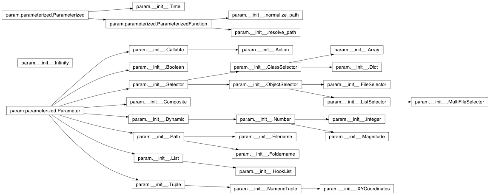
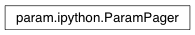
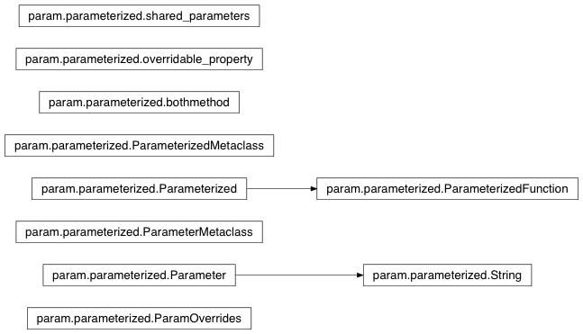
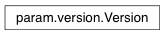

<!DOCTYPE html PUBLIC "-//W3C//DTD XHTML 1.0 Transitional//EN"
  "http://www.w3.org/TR/xhtml1/DTD/xhtml1-transitional.dtd">


<html xmlns="http://www.w3.org/1999/xhtml">
  <head>
    <meta http-equiv="Content-Type" content="text/html; charset=utf-8" />
    
    <title>param.param Package &#8212; Param 1.4.1-dev documentation</title>
    
    <link rel="stylesheet" href="../_static/nature.css" type="text/css" />
    <link rel="stylesheet" href="../_static/pygments.css" type="text/css" />
    <link rel="stylesheet" href="../_static/custom.css" type="text/css" />
    
    <script type="text/javascript">
      var DOCUMENTATION_OPTIONS = {
        URL_ROOT:    '../',
        VERSION:     '1.4.1-dev',
        COLLAPSE_INDEX: false,
        FILE_SUFFIX: '.html',
        HAS_SOURCE:  true
      };
    </script>
    <script type="text/javascript" src="../_static/jquery.js"></script>
    <script type="text/javascript" src="../_static/underscore.js"></script>
    <script type="text/javascript" src="../_static/doctools.js"></script>
    <script type="text/javascript" src="https://cdn.mathjax.org/mathjax/latest/MathJax.js?config=TeX-AMS-MML_HTMLorMML"></script>
    <script type="text/javascript" src="../_static/custom.js"></script>
    <link rel="top" title="Param 1.4.1-dev documentation" href="../index.html" /> 
  </head>
  <body role="document">
    <div class="related" role="navigation" aria-label="related navigation">
      <h3>Navigation</h3>
      <ul>
        <li class="right" style="margin-right: 10px">
          <a href="../genindex.html" title="General Index"
             accesskey="I">index</a></li>
        <li class="right" >
          <a href="../py-modindex.html" title="Python Module Index"
             >modules</a> |</li>
<li><a href="../index.html">Param Home</a></li>
<li><a href="#">Reference Manual</a></li>


      </ul>
    </div>  

    <div class="document">
      <div class="documentwrapper">
        <div class="bodywrapper">
          <div class="body" role="main">
            
  <div class="section" id="param-param-package">
<h1>param.param Package<a class="headerlink" href="#param-param-package" title="Permalink to this headline">¶</a></h1>
<div class="section" id="param-package">
<h2><code class="xref py py-mod docutils literal"><span class="pre">param</span></code> Package<a class="headerlink" href="#param-package" title="Permalink to this headline">¶</a></h2>

<map id="inheritance6ce4706456" name="inheritance6ce4706456">
<area shape="rect" id="node1" href="#param.__init__.Action" target="_top" title="A user&#45;provided function that can be invoked like a class or object method using ()." alt="" coords="560,107,689,127"/>
<area shape="rect" id="node2" href="#param.__init__.Callable" target="_top" title="Parameter holding a value that is a callable object, such as a function." alt="" coords="304,107,441,127"/>
<area shape="rect" id="node3" href="#param.__init__.Array" target="_top" title="Parameter whose value is a numpy array." alt="" coords="777,107,901,127"/>
<area shape="rect" id="node4" href="#param.__init__.ClassSelector" target="_top" title="Parameter whose value is a specified class or an instance of that class." alt="" coords="541,148,708,168"/>
<area shape="rect" id="node9" href="#param.__init__.Dict" target="_top" title="Parameter whose value is a dictionary." alt="" coords="781,148,897,168"/>
<area shape="rect" id="node5" href="#param.__init__.Boolean" target="_top" title="Binary or tristate Boolean Parameter." alt="" coords="303,148,442,168"/>
<area shape="rect" id="node6" href="#param.parameterized.Parameter" target="_top" title="An attribute descriptor for declaring parameters." alt="" coords="15,250,198,271"/>
<area shape="rect" id="node7" href="#param.__init__.Selector" target="_top" title="Parameter whose value must be chosen from a list of possibilities." alt="" coords="303,189,442,209"/>
<area shape="rect" id="node8" href="#param.__init__.Composite" target="_top" title="A Parameter that is a composite of a set of other attributes of the class." alt="" coords="297,230,448,250"/>
<area shape="rect" id="node10" href="#param.__init__.Dynamic" target="_top" title="Parameter whose value can be generated dynamically by a callable" alt="" coords="302,271,443,291"/>
<area shape="rect" id="node14" href="#param.__init__.Path" target="_top" title="Parameter that can be set to a string specifying the path of a file or folder." alt="" coords="313,312,433,332"/>
<area shape="rect" id="node17" href="#param.__init__.List" target="_top" title="Parameter whose value is a list of objects, usually of a specified type." alt="" coords="315,363,430,383"/>
<area shape="rect" id="node25" href="#param.__init__.Tuple" target="_top" title="A tuple Parameter (e.g. (&#39;a&#39;,7.6,[3,5])) with a fixed tuple length." alt="" coords="310,424,435,445"/>
<area shape="rect" id="node12" href="#param.__init__.ObjectSelector" target="_top" title="Parameter whose value must be one object from a list of possible objects." alt="" coords="539,189,710,209"/>
<area shape="rect" id="node20" href="#param.__init__.Number" target="_top" title="A numeric Dynamic Parameter, with a default value and optional bounds." alt="" coords="556,271,693,291"/>
<area shape="rect" id="node11" href="#param.__init__.FileSelector" target="_top" title="Given a path glob, allows one file to be selected from those matching." alt="" coords="761,189,918,209"/>
<area shape="rect" id="node21" href="#param.__init__.ListSelector" target="_top" title="Variant of ObjectSelector where the value can be multiple objects from" alt="" coords="761,230,917,250"/>
<area shape="rect" id="node13" href="#param.__init__.Filename" target="_top" title="Parameter that can be set to a string specifying the path of a file." alt="" coords="553,312,696,332"/>
<area shape="rect" id="node15" href="#param.__init__.Foldername" target="_top" title="Parameter that can be set to a string specifying the path of a folder." alt="" coords="546,353,703,373"/>
<area shape="rect" id="node16" href="#param.__init__.HookList" target="_top" title="Parameter whose value is a list of callable objects." alt="" coords="554,394,695,414"/>
<area shape="rect" id="node18" href="#param.__init__.Infinity" target="_top" title="An instance of this class represents an infinite value. Unlike" alt="" coords="42,138,171,158"/>
<area shape="rect" id="node19" href="#param.__init__.Integer" target="_top" title="Numeric Parameter required to be an Integer" alt="" coords="773,271,905,291"/>
<area shape="rect" id="node22" href="#param.__init__.Magnitude" target="_top" title="Numeric Parameter required to be in the range [0.0&#45;1.0]." alt="" coords="764,312,914,332"/>
<area shape="rect" id="node23" href="#param.__init__.MultiFileSelector" target="_top" title="Given a path glob, allows multiple files to be selected from the list of matches." alt="" coords="967,230,1147,250"/>
<area shape="rect" id="node24" href="#param.__init__.NumericTuple" target="_top" title="A numeric tuple Parameter (e.g. (4.5,7.6,3)) with a fixed tuple length." alt="" coords="541,435,708,455"/>
<area shape="rect" id="node28" href="#param.__init__.XYCoordinates" target="_top" title="A NumericTuple for an X,Y coordinate." alt="" coords="753,435,926,455"/>
<area shape="rect" id="node26" href="#param.__init__.Time" target="_top" title="params(label=String, time_type=Parameter, timestep=Parameter, unit=String, until=Parameter, name=String)" alt="" coords="312,5,433,25"/>
<area shape="rect" id="node27" href="#param.parameterized.Parameterized" target="_top" title="params(name=String)" alt="" coords="5,25,208,46"/>
<area shape="rect" id="node30" href="#param.parameterized.ParameterizedFunction" target="_top" title="params(name=String)" alt="" coords="249,46,496,66"/>
<area shape="rect" id="node29" href="#param.__init__.normalize_path" target="_top" title="params(prefix=String, name=String)" alt="" coords="537,25,712,46"/>
<area shape="rect" id="node31" href="#param.__init__.resolve_path" target="_top" title="params(path_to_file=Boolean, search_paths=List, name=String)" alt="" coords="543,66,705,86"/>
</map>
<span class="target" id="module-param.__init__"></span><p>Parameters are a kind of class attribute allowing special behavior,
including dynamically generated parameter values, documentation
strings, constant and read-only parameters, and type or range checking
at assignment time.</p>
<p>Potentially useful for any large Python program that needs
user-modifiable object attributes; see the Parameter and Parameterized
classes for more information.  If you do not want to add a dependency
on external code by importing from a separately installed param
package, you can simply save this file as param.py and copy it and
parameterized.py directly into your own package.</p>
<p>This file contains subclasses of Parameter, implementing specific
parameter types (e.g. Number), and also imports the definition of
Parameters and Parameterized classes.</p>
<dl class="attribute">
<dt id="param.__init__.Action">
<code class="descclassname">param.__init__.</code><code class="descname">Action</code><a class="reference internal" href="../_modules/param/__init__.html#Action"><span class="viewcode-link">[source]</span></a><a class="headerlink" href="#param.__init__.Action" title="Permalink to this definition">¶</a></dt>
<dd><p>A user-provided function that can be invoked like a class or object method using ().
In a GUI, this might be mapped to a button, but it can be invoked directly as well.</p>
</dd></dl>

<dl class="attribute">
<dt id="param.__init__.Array">
<code class="descclassname">param.__init__.</code><code class="descname">Array</code><a class="reference internal" href="../_modules/param/__init__.html#Array"><span class="viewcode-link">[source]</span></a><a class="headerlink" href="#param.__init__.Array" title="Permalink to this definition">¶</a></dt>
<dd><p>Parameter whose value is a numpy array.</p>
</dd></dl>

<dl class="attribute">
<dt id="param.__init__.Boolean">
<code class="descclassname">param.__init__.</code><code class="descname">Boolean</code><a class="reference internal" href="../_modules/param/__init__.html#Boolean"><span class="viewcode-link">[source]</span></a><a class="headerlink" href="#param.__init__.Boolean" title="Permalink to this definition">¶</a></dt>
<dd><p>Binary or tristate Boolean Parameter.</p>
</dd></dl>

<dl class="attribute">
<dt id="param.__init__.Callable">
<code class="descclassname">param.__init__.</code><code class="descname">Callable</code><a class="reference internal" href="../_modules/param/__init__.html#Callable"><span class="viewcode-link">[source]</span></a><a class="headerlink" href="#param.__init__.Callable" title="Permalink to this definition">¶</a></dt>
<dd><p>Parameter holding a value that is a callable object, such as a function.</p>
<p>A keyword argument instantiate=True should be provided when a
function object is used that might have state.  On the other hand,
regular standalone functions cannot be deepcopied as of Python
2.4, so instantiate must be False for those values.</p>
</dd></dl>

<dl class="attribute">
<dt id="param.__init__.ClassSelector">
<code class="descclassname">param.__init__.</code><code class="descname">ClassSelector</code><a class="reference internal" href="../_modules/param/__init__.html#ClassSelector"><span class="viewcode-link">[source]</span></a><a class="headerlink" href="#param.__init__.ClassSelector" title="Permalink to this definition">¶</a></dt>
<dd><p>Parameter whose value is a specified class or an instance of that class.
By default, requires an instance, but if is_instance=False, accepts a class instead.
Both class and instance values respect the instantiate slot, though it matters only
for is_instance=True.</p>
</dd></dl>

<dl class="attribute">
<dt id="param.__init__.Composite">
<code class="descclassname">param.__init__.</code><code class="descname">Composite</code><a class="reference internal" href="../_modules/param/__init__.html#Composite"><span class="viewcode-link">[source]</span></a><a class="headerlink" href="#param.__init__.Composite" title="Permalink to this definition">¶</a></dt>
<dd><p>A Parameter that is a composite of a set of other attributes of the class.</p>
<p>The constructor argument &#8216;attribs&#8217; takes a list of attribute
names, which may or may not be Parameters.  Getting the parameter
returns a list of the values of the constituents of the composite,
in the order specified.  Likewise, setting the parameter takes a
sequence of values and sets the value of the constituent
attributes.</p>
</dd></dl>

<dl class="attribute">
<dt id="param.__init__.Dict">
<code class="descclassname">param.__init__.</code><code class="descname">Dict</code><a class="reference internal" href="../_modules/param/__init__.html#Dict"><span class="viewcode-link">[source]</span></a><a class="headerlink" href="#param.__init__.Dict" title="Permalink to this definition">¶</a></dt>
<dd><p>Parameter whose value is a dictionary.</p>
</dd></dl>

<dl class="attribute">
<dt id="param.__init__.Dynamic">
<code class="descclassname">param.__init__.</code><code class="descname">Dynamic</code><a class="reference internal" href="../_modules/param/__init__.html#Dynamic"><span class="viewcode-link">[source]</span></a><a class="headerlink" href="#param.__init__.Dynamic" title="Permalink to this definition">¶</a></dt>
<dd><p>Parameter whose value can be generated dynamically by a callable
object.</p>
<p>If a Parameter is declared as Dynamic, it can be set a callable
object (such as a function or callable class), and getting the
parameter&#8217;s value will call that callable.</p>
<p>Note that at present, the callable object must allow attributes
to be set on itself.</p>
<p>[Python 2.4 limitation: the callable object must be an instance of a
callable class, rather than a named function or a lambda function,
otherwise the object will not be picklable or deepcopyable.]</p>
<p>If set as time_dependent, setting the Dynamic.time_fn allows the
production of dynamic values to be controlled: a new value will be
produced only if the current value of time_fn is different from
what it was the last time the parameter value was requested.</p>
<p>By default, the Dynamic parameters are not time_dependent so that
new values are generated on every call regardless of the time. The
default time_fn used when time_dependent is a single Time instance
that allows general manipulations of time. It may be set to some
other callable as required so long as a number is returned on each
call.</p>
</dd></dl>

<dl class="attribute">
<dt id="param.__init__.FileSelector">
<code class="descclassname">param.__init__.</code><code class="descname">FileSelector</code><a class="reference internal" href="../_modules/param/__init__.html#FileSelector"><span class="viewcode-link">[source]</span></a><a class="headerlink" href="#param.__init__.FileSelector" title="Permalink to this definition">¶</a></dt>
<dd><p>Given a path glob, allows one file to be selected from those matching.</p>
</dd></dl>

<dl class="attribute">
<dt id="param.__init__.Filename">
<code class="descclassname">param.__init__.</code><code class="descname">Filename</code><a class="reference internal" href="../_modules/param/__init__.html#Filename"><span class="viewcode-link">[source]</span></a><a class="headerlink" href="#param.__init__.Filename" title="Permalink to this definition">¶</a></dt>
<dd><p>Parameter that can be set to a string specifying the path of a file.</p>
<p>The string should be specified in UNIX style, but it will be
returned in the format of the user&#8217;s operating system.</p>
<p>The specified path can be absolute, or relative to either:</p>
<ul class="simple">
<li>any of the paths specified in the search_paths attribute (if
search_paths is not None);</li>
</ul>
<p>or</p>
<ul class="simple">
<li>any of the paths searched by resolve_path() (if search_paths
is None).</li>
</ul>
</dd></dl>

<dl class="attribute">
<dt id="param.__init__.Foldername">
<code class="descclassname">param.__init__.</code><code class="descname">Foldername</code><a class="reference internal" href="../_modules/param/__init__.html#Foldername"><span class="viewcode-link">[source]</span></a><a class="headerlink" href="#param.__init__.Foldername" title="Permalink to this definition">¶</a></dt>
<dd><p>Parameter that can be set to a string specifying the path of a folder.</p>
<p>The string should be specified in UNIX style, but it will be
returned in the format of the user&#8217;s operating system.</p>
<p>The specified path can be absolute, or relative to either:</p>
<ul class="simple">
<li>any of the paths specified in the search_paths attribute (if
search_paths is not None);</li>
</ul>
<p>or</p>
<ul class="simple">
<li>any of the paths searched by resolve_dir_path() (if search_paths
is None).</li>
</ul>
</dd></dl>

<dl class="attribute">
<dt id="param.__init__.HookList">
<code class="descclassname">param.__init__.</code><code class="descname">HookList</code><a class="reference internal" href="../_modules/param/__init__.html#HookList"><span class="viewcode-link">[source]</span></a><a class="headerlink" href="#param.__init__.HookList" title="Permalink to this definition">¶</a></dt>
<dd><p>Parameter whose value is a list of callable objects.</p>
<p>This type of List Parameter is typically used to provide a place
for users to register a set of commands to be called at a
specified place in some sequence of processing steps.</p>
</dd></dl>

<dl class="class">
<dt id="param.__init__.Infinity">
<em class="property">class </em><code class="descclassname">param.__init__.</code><code class="descname">Infinity</code><a class="reference internal" href="../_modules/param/__init__.html#Infinity"><span class="viewcode-link">[source]</span></a><a class="headerlink" href="#param.__init__.Infinity" title="Permalink to this definition">¶</a></dt>
<dd><p>Bases: <a class="reference external" href="https://docs.python.org/2/library/functions.html#object" title="(in Python v2.7)"><code class="xref py py-class docutils literal"><span class="pre">object</span></code></a></p>
<p>An instance of this class represents an infinite value. Unlike
Python&#8217;s float(&#8216;inf&#8217;) value, this object can be safely compared
with gmpy numeric types across different gmpy versions.</p>
<p>All operators on Infinity() return Infinity(), apart from the
comparison and equality operators. Equality works by checking
whether the two objects are both instances of this class.</p>
</dd></dl>

<dl class="attribute">
<dt id="param.__init__.Integer">
<code class="descclassname">param.__init__.</code><code class="descname">Integer</code><a class="reference internal" href="../_modules/param/__init__.html#Integer"><span class="viewcode-link">[source]</span></a><a class="headerlink" href="#param.__init__.Integer" title="Permalink to this definition">¶</a></dt>
<dd><p>Numeric Parameter required to be an Integer</p>
</dd></dl>

<dl class="attribute">
<dt id="param.__init__.List">
<code class="descclassname">param.__init__.</code><code class="descname">List</code><a class="reference internal" href="../_modules/param/__init__.html#List"><span class="viewcode-link">[source]</span></a><a class="headerlink" href="#param.__init__.List" title="Permalink to this definition">¶</a></dt>
<dd><p>Parameter whose value is a list of objects, usually of a specified type.</p>
<p>The bounds allow a minimum and/or maximum length of
list to be enforced.  If the class is non-None, all
items in the list are checked to be of that type.</p>
</dd></dl>

<dl class="attribute">
<dt id="param.__init__.ListSelector">
<code class="descclassname">param.__init__.</code><code class="descname">ListSelector</code><a class="reference internal" href="../_modules/param/__init__.html#ListSelector"><span class="viewcode-link">[source]</span></a><a class="headerlink" href="#param.__init__.ListSelector" title="Permalink to this definition">¶</a></dt>
<dd><p>Variant of ObjectSelector where the value can be multiple objects from
a list of possible objects.</p>
</dd></dl>

<dl class="attribute">
<dt id="param.__init__.Magnitude">
<code class="descclassname">param.__init__.</code><code class="descname">Magnitude</code><a class="reference internal" href="../_modules/param/__init__.html#Magnitude"><span class="viewcode-link">[source]</span></a><a class="headerlink" href="#param.__init__.Magnitude" title="Permalink to this definition">¶</a></dt>
<dd><p>Numeric Parameter required to be in the range [0.0-1.0].</p>
</dd></dl>

<dl class="attribute">
<dt id="param.__init__.MultiFileSelector">
<code class="descclassname">param.__init__.</code><code class="descname">MultiFileSelector</code><a class="reference internal" href="../_modules/param/__init__.html#MultiFileSelector"><span class="viewcode-link">[source]</span></a><a class="headerlink" href="#param.__init__.MultiFileSelector" title="Permalink to this definition">¶</a></dt>
<dd><p>Given a path glob, allows multiple files to be selected from the list of matches.</p>
</dd></dl>

<dl class="attribute">
<dt id="param.__init__.Number">
<code class="descclassname">param.__init__.</code><code class="descname">Number</code><a class="reference internal" href="../_modules/param/__init__.html#Number"><span class="viewcode-link">[source]</span></a><a class="headerlink" href="#param.__init__.Number" title="Permalink to this definition">¶</a></dt>
<dd><p>A numeric Dynamic Parameter, with a default value and optional bounds.</p>
<p>There are two types of bounds: <code class="docutils literal"><span class="pre">bounds</span></code> and
<code class="docutils literal"><span class="pre">softbounds</span></code>.  <code class="docutils literal"><span class="pre">bounds</span></code> are hard bounds: the parameter must
have a value within the specified range.  The default bounds are
(None,None), meaning there are actually no hard bounds.  One or
both bounds can be set by specifying a value
(e.g. bounds=(None,10) means there is no lower bound, and an upper
bound of 10). Bounds are inclusive by default, but exclusivity
can be specified for each bound by setting inclusive_bounds
(e.g. inclusive_bounds=(True,False) specifies an exclusive upper
bound).</p>
<p>Number is also a type of Dynamic parameter, so its value
can be set to a callable to get a dynamically generated
number (see Dynamic).</p>
<p>When not being dynamically generated, bounds are checked when a
Number is created or set. Using a default value outside the hard
bounds, or one that is not numeric, results in an exception. When
being dynamically generated, bounds are checked when a the value
of a Number is requested. A generated value that is not numeric,
or is outside the hard bounds, results in an exception.</p>
<p>As a special case, if allow_None=True (which is true by default if
the parameter has a default of None when declared) then a value
of None is also allowed.</p>
<p>A separate function set_in_bounds() is provided that will
silently crop the given value into the legal range, for use
in, for instance, a GUI.</p>
<p><code class="docutils literal"><span class="pre">softbounds</span></code> are present to indicate the typical range of
the parameter, but are not enforced. Setting the soft bounds
allows, for instance, a GUI to know what values to display on
sliders for the Number.</p>
<dl class="docutils">
<dt>Example of creating a Number::</dt>
<dd>AB = Number(default=0.5, bounds=(None,10), softbounds=(0,1), doc=&#8217;Distance from A to B.&#8217;)</dd>
</dl>
</dd></dl>

<dl class="attribute">
<dt id="param.__init__.NumericTuple">
<code class="descclassname">param.__init__.</code><code class="descname">NumericTuple</code><a class="reference internal" href="../_modules/param/__init__.html#NumericTuple"><span class="viewcode-link">[source]</span></a><a class="headerlink" href="#param.__init__.NumericTuple" title="Permalink to this definition">¶</a></dt>
<dd><p>A numeric tuple Parameter (e.g. (4.5,7.6,3)) with a fixed tuple length.</p>
</dd></dl>

<dl class="attribute">
<dt id="param.__init__.ObjectSelector">
<code class="descclassname">param.__init__.</code><code class="descname">ObjectSelector</code><a class="reference internal" href="../_modules/param/__init__.html#ObjectSelector"><span class="viewcode-link">[source]</span></a><a class="headerlink" href="#param.__init__.ObjectSelector" title="Permalink to this definition">¶</a></dt>
<dd><p>Parameter whose value must be one object from a list of possible objects.</p>
<p>check_on_set restricts the value to be among the current list of
objects. By default, if objects are initially supplied,
check_on_set is True, whereas if no objects are initially
supplied, check_on_set is False. This can be overridden by
explicitly specifying check_on_set initially.</p>
<p>If check_on_set is True (either because objects are supplied
initially, or because it is explicitly specified), the default
(initial) value must be among the list of objects (unless the
default value is None).</p>
</dd></dl>

<dl class="attribute">
<dt id="param.__init__.Path">
<code class="descclassname">param.__init__.</code><code class="descname">Path</code><a class="reference internal" href="../_modules/param/__init__.html#Path"><span class="viewcode-link">[source]</span></a><a class="headerlink" href="#param.__init__.Path" title="Permalink to this definition">¶</a></dt>
<dd><p>Parameter that can be set to a string specifying the path of a file or folder.</p>
<p>The string should be specified in UNIX style, but it will be
returned in the format of the user&#8217;s operating system. Please use
the Filename or Foldername classes if you require discrimination
between the two possibilities.</p>
<p>The specified path can be absolute, or relative to either:</p>
<ul class="simple">
<li>any of the paths specified in the search_paths attribute (if
search_paths is not None);</li>
</ul>
<p>or</p>
<ul class="simple">
<li>any of the paths searched by resolve_path() (if search_paths
is None).</li>
</ul>
</dd></dl>

<dl class="attribute">
<dt id="param.__init__.Selector">
<code class="descclassname">param.__init__.</code><code class="descname">Selector</code><a class="reference internal" href="../_modules/param/__init__.html#Selector"><span class="viewcode-link">[source]</span></a><a class="headerlink" href="#param.__init__.Selector" title="Permalink to this definition">¶</a></dt>
<dd><p>Parameter whose value must be chosen from a list of possibilities.</p>
<p>Subclasses must implement get_range().</p>
</dd></dl>

<dl class="class">
<dt id="param.__init__.Time">
<em class="property">class </em><code class="descclassname">param.__init__.</code><code class="descname">Time</code><span class="sig-paren">(</span><em>**params</em><span class="sig-paren">)</span><a class="reference internal" href="../_modules/param/__init__.html#Time"><span class="viewcode-link">[source]</span></a><a class="headerlink" href="#param.__init__.Time" title="Permalink to this definition">¶</a></dt>
<dd><p>Bases: <a class="reference internal" href="#param.parameterized.Parameterized" title="param.parameterized.Parameterized"><code class="xref py py-class docutils literal"><span class="pre">param.parameterized.Parameterized</span></code></a></p>
<p>params(label=String, time_type=Parameter, timestep=Parameter, unit=String, until=Parameter, name=String)</p>
<blockquote>
<div><p>A callable object returning a number for the current time.</p>
<p>Here &#8216;time&#8217; is an abstract concept that can be interpreted in any
useful way.  For instance, in a simulation, it would be the
current simulation time, while in a turn-taking game it could be
the number of moves so far.  The key intended usage is to allow
independent Parameterized objects with Dynamic parameters to
remain consistent with a global reference.</p>
<p>The time datatype (time_type) is configurable, but should
typically be an exact numeric type like an integer or a rational,
so that small floating-point errors do not accumulate as time is
incremented repeatedly.</p>
<p>When used as a context manager using the &#8216;with&#8217; statement
(implemented by the __enter__ and __exit__ special methods), entry
into a context pushes the state of the Time object, allowing the
effect of changes to the time value to be explored by setting,
incrementing or decrementing time as desired. This allows the
state of time-dependent objects to be modified temporarily as a
function of time, within the context&#8217;s block. For instance, you
could use the context manager to &#8220;see into the future&#8221; to collect
data over multiple times, without affecting the global time state
once exiting the context. Of course, you need to be careful not to
do anything while in context that would affect the lasting state
of your other objects, if you want things to return to their
starting state when exiting the context.</p>
<p>The starting time value of a new Time object is 0, converted to
the chosen time type. Here is an illustration of how time can be
manipulated using a Time object:</p>
<div class="highlight-default"><div class="highlight"><pre><span></span><span class="gp">&gt;&gt;&gt; </span><span class="n">time</span> <span class="o">=</span> <span class="n">Time</span><span class="p">(</span><span class="n">until</span><span class="o">=</span><span class="mi">20</span><span class="p">,</span> <span class="n">timestep</span><span class="o">=</span><span class="mi">1</span><span class="p">)</span>
<span class="gp">&gt;&gt;&gt; </span><span class="s1">&#39;The initial time is </span><span class="si">%s</span><span class="s1">&#39;</span> <span class="o">%</span> <span class="n">time</span><span class="p">()</span>
<span class="go">&#39;The initial time is 0&#39;</span>
<span class="gp">&gt;&gt;&gt; </span><span class="s1">&#39;Setting the time to </span><span class="si">%s</span><span class="s1">&#39;</span> <span class="o">%</span> <span class="n">time</span><span class="p">(</span><span class="mi">5</span><span class="p">)</span>
<span class="go">&#39;Setting the time to 5&#39;</span>
<span class="gp">&gt;&gt;&gt; </span><span class="n">time</span> <span class="o">+=</span> <span class="mi">5</span>
<span class="gp">&gt;&gt;&gt; </span><span class="s1">&#39;After incrementing by 5, the time is </span><span class="si">%s</span><span class="s1">&#39;</span> <span class="o">%</span> <span class="n">time</span><span class="p">()</span>
<span class="go">&#39;After incrementing by 5, the time is 10&#39;</span>
<span class="gp">&gt;&gt;&gt; </span><span class="k">with</span> <span class="n">time</span> <span class="k">as</span> <span class="n">t</span><span class="p">:</span>  <span class="c1"># Entering a context</span>
<span class="gp">... </span>    <span class="s1">&#39;Time before iteration: </span><span class="si">%s</span><span class="s1">&#39;</span> <span class="o">%</span> <span class="n">t</span><span class="p">()</span>
<span class="gp">... </span>    <span class="s1">&#39;Iteration: </span><span class="si">%s</span><span class="s1">&#39;</span> <span class="o">%</span> <span class="p">[</span><span class="n">val</span> <span class="k">for</span> <span class="n">val</span> <span class="ow">in</span> <span class="n">t</span><span class="p">]</span>
<span class="gp">... </span>    <span class="s1">&#39;Time after iteration: </span><span class="si">%s</span><span class="s1">&#39;</span> <span class="o">%</span> <span class="n">t</span><span class="p">()</span>
<span class="gp">... </span>    <span class="n">t</span> <span class="o">+=</span> <span class="mi">2</span>
<span class="gp">... </span>    <span class="s1">&#39;The until parameter may be exceeded outside iteration: </span><span class="si">%s</span><span class="s1">&#39;</span> <span class="o">%</span> <span class="n">t</span><span class="p">()</span>
<span class="go">&#39;Time before iteration: 10&#39;</span>
<span class="go">&#39;Iteration: [10, 11, 12, 13, 14, 15, 16, 17, 18, 19, 20]&#39;</span>
<span class="go">&#39;Time after iteration: 20&#39;</span>
<span class="go">&#39;The until parameter may be exceeded outside iteration: 22&#39;</span>
<span class="gp">&gt;&gt;&gt; </span><span class="s1">&#39;After exiting the context the time is back to </span><span class="si">%s</span><span class="s1">&#39;</span> <span class="o">%</span> <span class="n">time</span><span class="p">()</span>
<span class="go">&#39;After exiting the context the time is back to 10&#39;</span>
</pre></div>
</div>
</div></blockquote>
<p>
Parameters changed from their default values are marked in red.
Soft bound values are marked in cyan.
C/V= Constant/Variable, RO/RW = ReadOnly/ReadWrite, AN=Allow None</p>
<p>Name           Value         Type    Mode </p>
<p>label          &#8216;Time&#8217;       String   V RW 
time_type   &lt;type &#8216;int&#8217;&gt;  Parameter  C RW 
timestep        1.0       Parameter  V RW 
unit            None        String   V RW 
until        Infinity()   Parameter  V RW</p>
<p>Parameter docstrings:
=====================</p>
<p>label:     The label given to the Time object. Can be used to convey
           more specific notions of time as appropriate. For instance,
           the label could be &#8216;Simulation Time&#8217; or &#8216;Duration&#8217;.
time_type: Callable that Time will use to convert user-specified time
           values into the current time; all times will be of the resulting
           numeric type.
           
           By default, time is of integer type, but you can supply any
           arbitrary-precision type like a fixed-point decimal or a
           rational, to allow fractional times.  Floating-point times are
           also allowed, but are not recommended because they will suffer
           from accumulated rounding errors.  For instance, incrementing
           a floating-point value 0.0 by 0.05, 20 times, will not reach
           1.0 exactly.  Instead, it will be slightly higher than 1.0,
           because 0.05 cannot be represented exactly in a standard
           floating point numeric type. Fixed-point or rational types
           should be able to handle such computations exactly, avoiding
           accumulation issues over long time intervals.
           
           Some potentially useful exact number classes::
           
            - int: Suitable if all times can be expressed as integers.
           
            - Python&#8217;s decimal.Decimal and fractions.Fraction classes:
              widely available but slow and also awkward to specify times
              (e.g. cannot simply type 0.05, but have to use a special
              constructor or a string).
           
            - fixedpoint.FixedPoint: Allows a natural representation of
              times in decimal notation, but very slow and needs to be
              installed separately.
           
            - gmpy.mpq: Allows a natural representation of times in
              decimal notation, and very fast because it uses the GNU
              Multi-Precision library, but needs to be installed
              separately and depends on a non-Python library.  gmpy.mpq
              is gmpy&#8217;s rational type.
timestep:  Stepsize to be used with the iterator interface.
           Time can be advanced or decremented by any value, not just
           those corresponding to the stepsize, and so this value is only
           a default.
unit:      The units of the time dimensions. The default of None is set
           as the global time function may on an arbitrary time base.
           
           Typical values for the parameter are &#8216;seconds&#8217; (the SI unit
           for time) or subdivisions thereof (e.g. &#8216;milliseconds&#8217;).
until:     Declaration of an expected end to time values, if any.  When
           using the iterator interface, iteration will end before this
           value is exceeded.</p>
<dl class="method">
<dt id="param.__init__.Time.debug">
<code class="descname">debug</code><span class="sig-paren">(</span><em>msg</em>, <em>*args</em>, <em>**kw</em><span class="sig-paren">)</span><a class="headerlink" href="#param.__init__.Time.debug" title="Permalink to this definition">¶</a></dt>
<dd><p>Print msg merged with args as a debugging statement.</p>
<p>See Python&#8217;s logging module for details of message formatting.</p>
</dd></dl>

<dl class="method">
<dt id="param.__init__.Time.defaults">
<code class="descname">defaults</code><span class="sig-paren">(</span><span class="sig-paren">)</span><a class="headerlink" href="#param.__init__.Time.defaults" title="Permalink to this definition">¶</a></dt>
<dd><p>Return {parameter_name:parameter.default} for all non-constant
Parameters.</p>
<p>Note that a Parameter for which instantiate==True has its default
instantiated.</p>
</dd></dl>

<dl class="attribute">
<dt id="param.__init__.Time.force_new_dynamic_value">
<code class="descname">force_new_dynamic_value</code><em class="property"> = &lt;functools.partial object&gt;</em><a class="headerlink" href="#param.__init__.Time.force_new_dynamic_value" title="Permalink to this definition">¶</a></dt>
<dd></dd></dl>

<dl class="method">
<dt id="param.__init__.Time.get_param_values">
<code class="descname">get_param_values</code><span class="sig-paren">(</span><em>onlychanged=False</em><span class="sig-paren">)</span><a class="headerlink" href="#param.__init__.Time.get_param_values" title="Permalink to this definition">¶</a></dt>
<dd><p>Return a list of name,value pairs for all Parameters of this
object.</p>
<p>If onlychanged is True, will only return values that are not
equal to the default value.</p>
</dd></dl>

<dl class="attribute">
<dt id="param.__init__.Time.get_value_generator">
<code class="descname">get_value_generator</code><em class="property"> = &lt;functools.partial object&gt;</em><a class="headerlink" href="#param.__init__.Time.get_value_generator" title="Permalink to this definition">¶</a></dt>
<dd></dd></dl>

<dl class="attribute">
<dt id="param.__init__.Time.inspect_value">
<code class="descname">inspect_value</code><em class="property"> = &lt;functools.partial object&gt;</em><a class="headerlink" href="#param.__init__.Time.inspect_value" title="Permalink to this definition">¶</a></dt>
<dd></dd></dl>

<dl class="method">
<dt id="param.__init__.Time.message">
<code class="descname">message</code><span class="sig-paren">(</span><em>msg</em>, <em>*args</em>, <em>**kw</em><span class="sig-paren">)</span><a class="headerlink" href="#param.__init__.Time.message" title="Permalink to this definition">¶</a></dt>
<dd><p>Print msg merged with args as a message.</p>
<p>See Python&#8217;s logging module for details of message formatting.</p>
</dd></dl>

<dl class="method">
<dt id="param.__init__.Time.params">
<code class="descname">params</code><span class="sig-paren">(</span><em>parameter_name=None</em><span class="sig-paren">)</span><a class="headerlink" href="#param.__init__.Time.params" title="Permalink to this definition">¶</a></dt>
<dd><p>Return the Parameters of this class as the
dictionary {name: parameter_object}</p>
<p>Includes Parameters from this class and its
superclasses.</p>
</dd></dl>

<dl class="method">
<dt id="param.__init__.Time.pprint">
<code class="descname">pprint</code><span class="sig-paren">(</span><em>imports=None</em>, <em>prefix=' '</em>, <em>unknown_value='&lt;?&gt;'</em>, <em>qualify=False</em>, <em>separator=''</em><span class="sig-paren">)</span><a class="headerlink" href="#param.__init__.Time.pprint" title="Permalink to this definition">¶</a></dt>
<dd><p>(Experimental) Pretty printed representation that may be
evaluated with eval. See pprint() function for more details.</p>
</dd></dl>

<dl class="method">
<dt id="param.__init__.Time.print_param_defaults">
<code class="descname">print_param_defaults</code><span class="sig-paren">(</span><span class="sig-paren">)</span><a class="headerlink" href="#param.__init__.Time.print_param_defaults" title="Permalink to this definition">¶</a></dt>
<dd><p>Print the default values of all cls&#8217;s Parameters.</p>
</dd></dl>

<dl class="method">
<dt id="param.__init__.Time.print_param_values">
<code class="descname">print_param_values</code><span class="sig-paren">(</span><span class="sig-paren">)</span><a class="headerlink" href="#param.__init__.Time.print_param_values" title="Permalink to this definition">¶</a></dt>
<dd><p>Print the values of all this object&#8217;s Parameters.</p>
</dd></dl>

<dl class="method">
<dt id="param.__init__.Time.script_repr">
<code class="descname">script_repr</code><span class="sig-paren">(</span><em>imports=[]</em>, <em>prefix='    '</em><span class="sig-paren">)</span><a class="headerlink" href="#param.__init__.Time.script_repr" title="Permalink to this definition">¶</a></dt>
<dd><p>Variant of __repr__ designed for generating a runnable script.</p>
</dd></dl>

<dl class="method">
<dt id="param.__init__.Time.set_default">
<code class="descname">set_default</code><span class="sig-paren">(</span><em>param_name</em>, <em>value</em><span class="sig-paren">)</span><a class="headerlink" href="#param.__init__.Time.set_default" title="Permalink to this definition">¶</a></dt>
<dd><p>Set the default value of param_name.</p>
<p>Equivalent to setting param_name on the class.</p>
</dd></dl>

<dl class="attribute">
<dt id="param.__init__.Time.set_dynamic_time_fn">
<code class="descname">set_dynamic_time_fn</code><em class="property"> = &lt;functools.partial object&gt;</em><a class="headerlink" href="#param.__init__.Time.set_dynamic_time_fn" title="Permalink to this definition">¶</a></dt>
<dd></dd></dl>

<dl class="attribute">
<dt id="param.__init__.Time.set_param">
<code class="descname">set_param</code><em class="property"> = &lt;functools.partial object&gt;</em><a class="headerlink" href="#param.__init__.Time.set_param" title="Permalink to this definition">¶</a></dt>
<dd></dd></dl>

<dl class="method">
<dt id="param.__init__.Time.state_pop">
<code class="descname">state_pop</code><span class="sig-paren">(</span><span class="sig-paren">)</span><a class="headerlink" href="#param.__init__.Time.state_pop" title="Permalink to this definition">¶</a></dt>
<dd><p>Restore the most recently saved state.</p>
<p>See state_push() for more details.</p>
</dd></dl>

<dl class="method">
<dt id="param.__init__.Time.state_push">
<code class="descname">state_push</code><span class="sig-paren">(</span><span class="sig-paren">)</span><a class="headerlink" href="#param.__init__.Time.state_push" title="Permalink to this definition">¶</a></dt>
<dd><p>Save this instance&#8217;s state.</p>
<p>For Parameterized instances, this includes the state of
dynamically generated values.</p>
<p>Subclasses that maintain short-term state should additionally
save and restore that state using state_push() and
state_pop().</p>
<p>Generally, this method is used by operations that need to test
something without permanently altering the objects&#8217; state.</p>
</dd></dl>

<dl class="attribute">
<dt id="param.__init__.Time.time_type">
<code class="descname">time_type</code><a class="headerlink" href="#param.__init__.Time.time_type" title="Permalink to this definition">¶</a></dt>
<dd><p>alias of <a class="reference external" href="https://docs.python.org/2/library/functions.html#int" title="(in Python v2.7)"><code class="xref py py-class docutils literal"><span class="pre">int</span></code></a></p>
</dd></dl>

<dl class="method">
<dt id="param.__init__.Time.verbose">
<code class="descname">verbose</code><span class="sig-paren">(</span><em>msg</em>, <em>*args</em>, <em>**kw</em><span class="sig-paren">)</span><a class="headerlink" href="#param.__init__.Time.verbose" title="Permalink to this definition">¶</a></dt>
<dd><p>Print msg merged with args as a verbose message.</p>
<p>See Python&#8217;s logging module for details of message formatting.</p>
</dd></dl>

<dl class="method">
<dt id="param.__init__.Time.warning">
<code class="descname">warning</code><span class="sig-paren">(</span><em>msg</em>, <em>*args</em>, <em>**kw</em><span class="sig-paren">)</span><a class="headerlink" href="#param.__init__.Time.warning" title="Permalink to this definition">¶</a></dt>
<dd><p>Print msg merged with args as a warning, unless module variable
warnings_as_exceptions is True, then raise an Exception
containing the arguments.</p>
<p>See Python&#8217;s logging module for details of message formatting.</p>
</dd></dl>

</dd></dl>

<dl class="attribute">
<dt id="param.__init__.Tuple">
<code class="descclassname">param.__init__.</code><code class="descname">Tuple</code><a class="reference internal" href="../_modules/param/__init__.html#Tuple"><span class="viewcode-link">[source]</span></a><a class="headerlink" href="#param.__init__.Tuple" title="Permalink to this definition">¶</a></dt>
<dd><p>A tuple Parameter (e.g. (&#8216;a&#8217;,7.6,[3,5])) with a fixed tuple length.</p>
</dd></dl>

<dl class="attribute">
<dt id="param.__init__.XYCoordinates">
<code class="descclassname">param.__init__.</code><code class="descname">XYCoordinates</code><a class="reference internal" href="../_modules/param/__init__.html#XYCoordinates"><span class="viewcode-link">[source]</span></a><a class="headerlink" href="#param.__init__.XYCoordinates" title="Permalink to this definition">¶</a></dt>
<dd><p>A NumericTuple for an X,Y coordinate.</p>
</dd></dl>

<dl class="function">
<dt id="param.__init__.abbreviate_paths">
<code class="descclassname">param.__init__.</code><code class="descname">abbreviate_paths</code><span class="sig-paren">(</span><em>pathspec</em>, <em>named_paths</em><span class="sig-paren">)</span><a class="reference internal" href="../_modules/param/__init__.html#abbreviate_paths"><span class="viewcode-link">[source]</span></a><a class="headerlink" href="#param.__init__.abbreviate_paths" title="Permalink to this definition">¶</a></dt>
<dd><p>Given a dict of (pathname,path) pairs, removes any prefix shared by all pathnames.
Helps keep menu items short yet unambiguous.</p>
</dd></dl>

<dl class="function">
<dt id="param.__init__.concrete_descendents">
<code class="descclassname">param.__init__.</code><code class="descname">concrete_descendents</code><span class="sig-paren">(</span><em>parentclass</em><span class="sig-paren">)</span><a class="reference internal" href="../_modules/param/__init__.html#concrete_descendents"><span class="viewcode-link">[source]</span></a><a class="headerlink" href="#param.__init__.concrete_descendents" title="Permalink to this definition">¶</a></dt>
<dd><p>Return a dictionary containing all subclasses of the specified
parentclass, including the parentclass.  Only classes that are
defined in scripts that have been run or modules that have been
imported are included, so the caller will usually first do <code class="docutils literal"><span class="pre">from</span>
<span class="pre">package</span> <span class="pre">import</span> <span class="pre">*</span></code>.</p>
<p>Only non-abstract classes will be included.</p>
</dd></dl>

<dl class="data">
<dt id="param.__init__.main">
<code class="descclassname">param.__init__.</code><code class="descname">main</code><em class="property"> = Parameterized(name='main')</em><a class="headerlink" href="#param.__init__.main" title="Permalink to this definition">¶</a></dt>
<dd><p>Top-level object to allow messaging not tied to a particular
Parameterized object, as in &#8216;param.main.warning(&#8220;Invalid option&#8221;)&#8217;.</p>
</dd></dl>

<dl class="class">
<dt id="param.__init__.normalize_path">
<em class="property">class </em><code class="descclassname">param.__init__.</code><code class="descname">normalize_path</code><span class="sig-paren">(</span><em>**params</em><span class="sig-paren">)</span><a class="reference internal" href="../_modules/param/__init__.html#normalize_path"><span class="viewcode-link">[source]</span></a><a class="headerlink" href="#param.__init__.normalize_path" title="Permalink to this definition">¶</a></dt>
<dd><p>Bases: <a class="reference internal" href="#param.parameterized.ParameterizedFunction" title="param.parameterized.ParameterizedFunction"><code class="xref py py-class docutils literal"><span class="pre">param.parameterized.ParameterizedFunction</span></code></a></p>
<p>params(prefix=String, name=String)</p>
<blockquote>
<div><p>Convert a UNIX-style path to the current OS&#8217;s format,
typically for creating a new file or directory.</p>
<p>If the path is not already absolute, it will be made absolute
(using the prefix parameter).</p>
<p>Should do the same as Python&#8217;s os.path.abspath(), except using
prefix rather than os.getcwd).</p>
</div></blockquote>
<p>
Parameters changed from their default values are marked in red.
Soft bound values are marked in cyan.
C/V= Constant/Variable, RO/RW = ReadOnly/ReadWrite, AN=Allow None</p>
<p>Name              Value             Type   Mode </p>
<p>prefix   &#8216;/private/tmp/param/doc&#8217;  String  V RW</p>
<p>Parameter docstrings:
=====================</p>
<p>prefix: Prepended to the specified path, if that path is not
        absolute.</p>
<dl class="method">
<dt id="param.__init__.normalize_path.debug">
<code class="descname">debug</code><span class="sig-paren">(</span><em>msg</em>, <em>*args</em>, <em>**kw</em><span class="sig-paren">)</span><a class="headerlink" href="#param.__init__.normalize_path.debug" title="Permalink to this definition">¶</a></dt>
<dd><p>Print msg merged with args as a debugging statement.</p>
<p>See Python&#8217;s logging module for details of message formatting.</p>
</dd></dl>

<dl class="method">
<dt id="param.__init__.normalize_path.defaults">
<code class="descname">defaults</code><span class="sig-paren">(</span><span class="sig-paren">)</span><a class="headerlink" href="#param.__init__.normalize_path.defaults" title="Permalink to this definition">¶</a></dt>
<dd><p>Return {parameter_name:parameter.default} for all non-constant
Parameters.</p>
<p>Note that a Parameter for which instantiate==True has its default
instantiated.</p>
</dd></dl>

<dl class="attribute">
<dt id="param.__init__.normalize_path.force_new_dynamic_value">
<code class="descname">force_new_dynamic_value</code><em class="property"> = &lt;functools.partial object&gt;</em><a class="headerlink" href="#param.__init__.normalize_path.force_new_dynamic_value" title="Permalink to this definition">¶</a></dt>
<dd></dd></dl>

<dl class="method">
<dt id="param.__init__.normalize_path.get_param_values">
<code class="descname">get_param_values</code><span class="sig-paren">(</span><em>onlychanged=False</em><span class="sig-paren">)</span><a class="headerlink" href="#param.__init__.normalize_path.get_param_values" title="Permalink to this definition">¶</a></dt>
<dd><p>Return a list of name,value pairs for all Parameters of this
object.</p>
<p>If onlychanged is True, will only return values that are not
equal to the default value.</p>
</dd></dl>

<dl class="attribute">
<dt id="param.__init__.normalize_path.get_value_generator">
<code class="descname">get_value_generator</code><em class="property"> = &lt;functools.partial object&gt;</em><a class="headerlink" href="#param.__init__.normalize_path.get_value_generator" title="Permalink to this definition">¶</a></dt>
<dd></dd></dl>

<dl class="attribute">
<dt id="param.__init__.normalize_path.inspect_value">
<code class="descname">inspect_value</code><em class="property"> = &lt;functools.partial object&gt;</em><a class="headerlink" href="#param.__init__.normalize_path.inspect_value" title="Permalink to this definition">¶</a></dt>
<dd></dd></dl>

<dl class="attribute">
<dt id="param.__init__.normalize_path.instance">
<code class="descname">instance</code><em class="property"> = &lt;functools.partial object&gt;</em><a class="headerlink" href="#param.__init__.normalize_path.instance" title="Permalink to this definition">¶</a></dt>
<dd></dd></dl>

<dl class="method">
<dt id="param.__init__.normalize_path.message">
<code class="descname">message</code><span class="sig-paren">(</span><em>msg</em>, <em>*args</em>, <em>**kw</em><span class="sig-paren">)</span><a class="headerlink" href="#param.__init__.normalize_path.message" title="Permalink to this definition">¶</a></dt>
<dd><p>Print msg merged with args as a message.</p>
<p>See Python&#8217;s logging module for details of message formatting.</p>
</dd></dl>

<dl class="method">
<dt id="param.__init__.normalize_path.params">
<code class="descname">params</code><span class="sig-paren">(</span><em>parameter_name=None</em><span class="sig-paren">)</span><a class="headerlink" href="#param.__init__.normalize_path.params" title="Permalink to this definition">¶</a></dt>
<dd><p>Return the Parameters of this class as the
dictionary {name: parameter_object}</p>
<p>Includes Parameters from this class and its
superclasses.</p>
</dd></dl>

<dl class="method">
<dt id="param.__init__.normalize_path.pprint">
<code class="descname">pprint</code><span class="sig-paren">(</span><em>imports=None</em>, <em>prefix='\n    '</em>, <em>unknown_value='&lt;?&gt;'</em>, <em>qualify=False</em>, <em>separator=''</em><span class="sig-paren">)</span><a class="headerlink" href="#param.__init__.normalize_path.pprint" title="Permalink to this definition">¶</a></dt>
<dd><p>Same as Parameterized.pprint, except that X.classname(Y
is replaced with X.classname.instance(Y</p>
</dd></dl>

<dl class="method">
<dt id="param.__init__.normalize_path.print_param_defaults">
<code class="descname">print_param_defaults</code><span class="sig-paren">(</span><span class="sig-paren">)</span><a class="headerlink" href="#param.__init__.normalize_path.print_param_defaults" title="Permalink to this definition">¶</a></dt>
<dd><p>Print the default values of all cls&#8217;s Parameters.</p>
</dd></dl>

<dl class="method">
<dt id="param.__init__.normalize_path.print_param_values">
<code class="descname">print_param_values</code><span class="sig-paren">(</span><span class="sig-paren">)</span><a class="headerlink" href="#param.__init__.normalize_path.print_param_values" title="Permalink to this definition">¶</a></dt>
<dd><p>Print the values of all this object&#8217;s Parameters.</p>
</dd></dl>

<dl class="method">
<dt id="param.__init__.normalize_path.script_repr">
<code class="descname">script_repr</code><span class="sig-paren">(</span><em>imports=[]</em>, <em>prefix='    '</em><span class="sig-paren">)</span><a class="headerlink" href="#param.__init__.normalize_path.script_repr" title="Permalink to this definition">¶</a></dt>
<dd><p>Same as Parameterized.script_repr, except that X.classname(Y
is replaced with X.classname.instance(Y</p>
</dd></dl>

<dl class="method">
<dt id="param.__init__.normalize_path.set_default">
<code class="descname">set_default</code><span class="sig-paren">(</span><em>param_name</em>, <em>value</em><span class="sig-paren">)</span><a class="headerlink" href="#param.__init__.normalize_path.set_default" title="Permalink to this definition">¶</a></dt>
<dd><p>Set the default value of param_name.</p>
<p>Equivalent to setting param_name on the class.</p>
</dd></dl>

<dl class="attribute">
<dt id="param.__init__.normalize_path.set_dynamic_time_fn">
<code class="descname">set_dynamic_time_fn</code><em class="property"> = &lt;functools.partial object&gt;</em><a class="headerlink" href="#param.__init__.normalize_path.set_dynamic_time_fn" title="Permalink to this definition">¶</a></dt>
<dd></dd></dl>

<dl class="attribute">
<dt id="param.__init__.normalize_path.set_param">
<code class="descname">set_param</code><em class="property"> = &lt;functools.partial object&gt;</em><a class="headerlink" href="#param.__init__.normalize_path.set_param" title="Permalink to this definition">¶</a></dt>
<dd></dd></dl>

<dl class="method">
<dt id="param.__init__.normalize_path.state_pop">
<code class="descname">state_pop</code><span class="sig-paren">(</span><span class="sig-paren">)</span><a class="headerlink" href="#param.__init__.normalize_path.state_pop" title="Permalink to this definition">¶</a></dt>
<dd><p>Restore the most recently saved state.</p>
<p>See state_push() for more details.</p>
</dd></dl>

<dl class="method">
<dt id="param.__init__.normalize_path.state_push">
<code class="descname">state_push</code><span class="sig-paren">(</span><span class="sig-paren">)</span><a class="headerlink" href="#param.__init__.normalize_path.state_push" title="Permalink to this definition">¶</a></dt>
<dd><p>Save this instance&#8217;s state.</p>
<p>For Parameterized instances, this includes the state of
dynamically generated values.</p>
<p>Subclasses that maintain short-term state should additionally
save and restore that state using state_push() and
state_pop().</p>
<p>Generally, this method is used by operations that need to test
something without permanently altering the objects&#8217; state.</p>
</dd></dl>

<dl class="method">
<dt id="param.__init__.normalize_path.verbose">
<code class="descname">verbose</code><span class="sig-paren">(</span><em>msg</em>, <em>*args</em>, <em>**kw</em><span class="sig-paren">)</span><a class="headerlink" href="#param.__init__.normalize_path.verbose" title="Permalink to this definition">¶</a></dt>
<dd><p>Print msg merged with args as a verbose message.</p>
<p>See Python&#8217;s logging module for details of message formatting.</p>
</dd></dl>

<dl class="method">
<dt id="param.__init__.normalize_path.warning">
<code class="descname">warning</code><span class="sig-paren">(</span><em>msg</em>, <em>*args</em>, <em>**kw</em><span class="sig-paren">)</span><a class="headerlink" href="#param.__init__.normalize_path.warning" title="Permalink to this definition">¶</a></dt>
<dd><p>Print msg merged with args as a warning, unless module variable
warnings_as_exceptions is True, then raise an Exception
containing the arguments.</p>
<p>See Python&#8217;s logging module for details of message formatting.</p>
</dd></dl>

</dd></dl>

<dl class="function">
<dt id="param.__init__.produce_value">
<code class="descclassname">param.__init__.</code><code class="descname">produce_value</code><span class="sig-paren">(</span><em>value_obj</em><span class="sig-paren">)</span><a class="reference internal" href="../_modules/param/__init__.html#produce_value"><span class="viewcode-link">[source]</span></a><a class="headerlink" href="#param.__init__.produce_value" title="Permalink to this definition">¶</a></dt>
<dd><p>A helper function that produces an actual parameter from a stored
object: if the object is callable, call it, otherwise return the
object.</p>
</dd></dl>

<dl class="class">
<dt id="param.__init__.resolve_path">
<em class="property">class </em><code class="descclassname">param.__init__.</code><code class="descname">resolve_path</code><span class="sig-paren">(</span><em>**params</em><span class="sig-paren">)</span><a class="reference internal" href="../_modules/param/__init__.html#resolve_path"><span class="viewcode-link">[source]</span></a><a class="headerlink" href="#param.__init__.resolve_path" title="Permalink to this definition">¶</a></dt>
<dd><p>Bases: <a class="reference internal" href="#param.parameterized.ParameterizedFunction" title="param.parameterized.ParameterizedFunction"><code class="xref py py-class docutils literal"><span class="pre">param.parameterized.ParameterizedFunction</span></code></a></p>
<p>params(path_to_file=Boolean, search_paths=List, name=String)</p>
<blockquote>
<div><p>Find the path to an existing file, searching the paths specified
in the search_paths parameter if the filename is not absolute, and
converting a UNIX-style path to the current OS&#8217;s format if
necessary.</p>
<p>To turn a supplied relative path into an absolute one, the path is
appended to paths in the search_paths parameter, in order, until
the file is found.</p>
<p>An IOError is raised if the file is not found.</p>
<p>Similar to Python&#8217;s os.path.abspath(), except more search paths
than just os.getcwd() can be used, and the file must exist.</p>
</div></blockquote>
<p>
Parameters changed from their default values are marked in red.
Soft bound values are marked in cyan.
C/V= Constant/Variable, RO/RW = ReadOnly/ReadWrite, AN=Allow None</p>
<p>Name                     Value               Type     Bounds   Mode </p>
<p>path_to_file              True             Boolean    (0, 1)   V RW 
search_paths   [&#8216;/private/tmp/param/doc&#8217;]    List   (0, None)  V RW</p>
<p>Parameter docstrings:
=====================</p>
<p>path_to_file: String specifying whether the path refers to a &#8216;File&#8217; or a &#8216;Folder&#8217;.
search_paths: Prepended to a non-relative path, in order, until a file is
              found.</p>
<dl class="method">
<dt id="param.__init__.resolve_path.debug">
<code class="descname">debug</code><span class="sig-paren">(</span><em>msg</em>, <em>*args</em>, <em>**kw</em><span class="sig-paren">)</span><a class="headerlink" href="#param.__init__.resolve_path.debug" title="Permalink to this definition">¶</a></dt>
<dd><p>Print msg merged with args as a debugging statement.</p>
<p>See Python&#8217;s logging module for details of message formatting.</p>
</dd></dl>

<dl class="method">
<dt id="param.__init__.resolve_path.defaults">
<code class="descname">defaults</code><span class="sig-paren">(</span><span class="sig-paren">)</span><a class="headerlink" href="#param.__init__.resolve_path.defaults" title="Permalink to this definition">¶</a></dt>
<dd><p>Return {parameter_name:parameter.default} for all non-constant
Parameters.</p>
<p>Note that a Parameter for which instantiate==True has its default
instantiated.</p>
</dd></dl>

<dl class="attribute">
<dt id="param.__init__.resolve_path.force_new_dynamic_value">
<code class="descname">force_new_dynamic_value</code><em class="property"> = &lt;functools.partial object&gt;</em><a class="headerlink" href="#param.__init__.resolve_path.force_new_dynamic_value" title="Permalink to this definition">¶</a></dt>
<dd></dd></dl>

<dl class="method">
<dt id="param.__init__.resolve_path.get_param_values">
<code class="descname">get_param_values</code><span class="sig-paren">(</span><em>onlychanged=False</em><span class="sig-paren">)</span><a class="headerlink" href="#param.__init__.resolve_path.get_param_values" title="Permalink to this definition">¶</a></dt>
<dd><p>Return a list of name,value pairs for all Parameters of this
object.</p>
<p>If onlychanged is True, will only return values that are not
equal to the default value.</p>
</dd></dl>

<dl class="attribute">
<dt id="param.__init__.resolve_path.get_value_generator">
<code class="descname">get_value_generator</code><em class="property"> = &lt;functools.partial object&gt;</em><a class="headerlink" href="#param.__init__.resolve_path.get_value_generator" title="Permalink to this definition">¶</a></dt>
<dd></dd></dl>

<dl class="attribute">
<dt id="param.__init__.resolve_path.inspect_value">
<code class="descname">inspect_value</code><em class="property"> = &lt;functools.partial object&gt;</em><a class="headerlink" href="#param.__init__.resolve_path.inspect_value" title="Permalink to this definition">¶</a></dt>
<dd></dd></dl>

<dl class="attribute">
<dt id="param.__init__.resolve_path.instance">
<code class="descname">instance</code><em class="property"> = &lt;functools.partial object&gt;</em><a class="headerlink" href="#param.__init__.resolve_path.instance" title="Permalink to this definition">¶</a></dt>
<dd></dd></dl>

<dl class="method">
<dt id="param.__init__.resolve_path.message">
<code class="descname">message</code><span class="sig-paren">(</span><em>msg</em>, <em>*args</em>, <em>**kw</em><span class="sig-paren">)</span><a class="headerlink" href="#param.__init__.resolve_path.message" title="Permalink to this definition">¶</a></dt>
<dd><p>Print msg merged with args as a message.</p>
<p>See Python&#8217;s logging module for details of message formatting.</p>
</dd></dl>

<dl class="method">
<dt id="param.__init__.resolve_path.params">
<code class="descname">params</code><span class="sig-paren">(</span><em>parameter_name=None</em><span class="sig-paren">)</span><a class="headerlink" href="#param.__init__.resolve_path.params" title="Permalink to this definition">¶</a></dt>
<dd><p>Return the Parameters of this class as the
dictionary {name: parameter_object}</p>
<p>Includes Parameters from this class and its
superclasses.</p>
</dd></dl>

<dl class="method">
<dt id="param.__init__.resolve_path.pprint">
<code class="descname">pprint</code><span class="sig-paren">(</span><em>imports=None</em>, <em>prefix='\n    '</em>, <em>unknown_value='&lt;?&gt;'</em>, <em>qualify=False</em>, <em>separator=''</em><span class="sig-paren">)</span><a class="headerlink" href="#param.__init__.resolve_path.pprint" title="Permalink to this definition">¶</a></dt>
<dd><p>Same as Parameterized.pprint, except that X.classname(Y
is replaced with X.classname.instance(Y</p>
</dd></dl>

<dl class="method">
<dt id="param.__init__.resolve_path.print_param_defaults">
<code class="descname">print_param_defaults</code><span class="sig-paren">(</span><span class="sig-paren">)</span><a class="headerlink" href="#param.__init__.resolve_path.print_param_defaults" title="Permalink to this definition">¶</a></dt>
<dd><p>Print the default values of all cls&#8217;s Parameters.</p>
</dd></dl>

<dl class="method">
<dt id="param.__init__.resolve_path.print_param_values">
<code class="descname">print_param_values</code><span class="sig-paren">(</span><span class="sig-paren">)</span><a class="headerlink" href="#param.__init__.resolve_path.print_param_values" title="Permalink to this definition">¶</a></dt>
<dd><p>Print the values of all this object&#8217;s Parameters.</p>
</dd></dl>

<dl class="method">
<dt id="param.__init__.resolve_path.script_repr">
<code class="descname">script_repr</code><span class="sig-paren">(</span><em>imports=[]</em>, <em>prefix='    '</em><span class="sig-paren">)</span><a class="headerlink" href="#param.__init__.resolve_path.script_repr" title="Permalink to this definition">¶</a></dt>
<dd><p>Same as Parameterized.script_repr, except that X.classname(Y
is replaced with X.classname.instance(Y</p>
</dd></dl>

<dl class="method">
<dt id="param.__init__.resolve_path.set_default">
<code class="descname">set_default</code><span class="sig-paren">(</span><em>param_name</em>, <em>value</em><span class="sig-paren">)</span><a class="headerlink" href="#param.__init__.resolve_path.set_default" title="Permalink to this definition">¶</a></dt>
<dd><p>Set the default value of param_name.</p>
<p>Equivalent to setting param_name on the class.</p>
</dd></dl>

<dl class="attribute">
<dt id="param.__init__.resolve_path.set_dynamic_time_fn">
<code class="descname">set_dynamic_time_fn</code><em class="property"> = &lt;functools.partial object&gt;</em><a class="headerlink" href="#param.__init__.resolve_path.set_dynamic_time_fn" title="Permalink to this definition">¶</a></dt>
<dd></dd></dl>

<dl class="attribute">
<dt id="param.__init__.resolve_path.set_param">
<code class="descname">set_param</code><em class="property"> = &lt;functools.partial object&gt;</em><a class="headerlink" href="#param.__init__.resolve_path.set_param" title="Permalink to this definition">¶</a></dt>
<dd></dd></dl>

<dl class="method">
<dt id="param.__init__.resolve_path.state_pop">
<code class="descname">state_pop</code><span class="sig-paren">(</span><span class="sig-paren">)</span><a class="headerlink" href="#param.__init__.resolve_path.state_pop" title="Permalink to this definition">¶</a></dt>
<dd><p>Restore the most recently saved state.</p>
<p>See state_push() for more details.</p>
</dd></dl>

<dl class="method">
<dt id="param.__init__.resolve_path.state_push">
<code class="descname">state_push</code><span class="sig-paren">(</span><span class="sig-paren">)</span><a class="headerlink" href="#param.__init__.resolve_path.state_push" title="Permalink to this definition">¶</a></dt>
<dd><p>Save this instance&#8217;s state.</p>
<p>For Parameterized instances, this includes the state of
dynamically generated values.</p>
<p>Subclasses that maintain short-term state should additionally
save and restore that state using state_push() and
state_pop().</p>
<p>Generally, this method is used by operations that need to test
something without permanently altering the objects&#8217; state.</p>
</dd></dl>

<dl class="method">
<dt id="param.__init__.resolve_path.verbose">
<code class="descname">verbose</code><span class="sig-paren">(</span><em>msg</em>, <em>*args</em>, <em>**kw</em><span class="sig-paren">)</span><a class="headerlink" href="#param.__init__.resolve_path.verbose" title="Permalink to this definition">¶</a></dt>
<dd><p>Print msg merged with args as a verbose message.</p>
<p>See Python&#8217;s logging module for details of message formatting.</p>
</dd></dl>

<dl class="method">
<dt id="param.__init__.resolve_path.warning">
<code class="descname">warning</code><span class="sig-paren">(</span><em>msg</em>, <em>*args</em>, <em>**kw</em><span class="sig-paren">)</span><a class="headerlink" href="#param.__init__.resolve_path.warning" title="Permalink to this definition">¶</a></dt>
<dd><p>Print msg merged with args as a warning, unless module variable
warnings_as_exceptions is True, then raise an Exception
containing the arguments.</p>
<p>See Python&#8217;s logging module for details of message formatting.</p>
</dd></dl>

</dd></dl>

</div>
<div class="section" id="ipython-module">
<h2><code class="xref py py-mod docutils literal"><span class="pre">ipython</span></code> Module<a class="headerlink" href="#ipython-module" title="Permalink to this headline">¶</a></h2>

<map id="inheritance6c9d819611" name="inheritance6c9d819611">
<area shape="rect" id="node1" href="#param.ipython.ParamPager" target="_top" title="Callable class that displays information about the supplied" alt="" coords="5,5,190,29"/>
</map>
<span class="target" id="module-param.ipython"></span><p>Optional IPython extension for working with Parameters.</p>
<p>This extension offers extended but completely optional functionality
for IPython users.  From within IPython, it may be loaded using:</p>
<p>%load_ext param.ipython</p>
<p>This will register the %params line magic to allow easy inspection of
all the parameters defined on a parameterized class or object:</p>
<p>%params &lt;parameterized class or object&gt;</p>
<p>All parameters of the class or object will be listed in the IPython
pager together with all their corresponding attributes and
docstrings. Note that the class or object to be inspected must already
exist in the active namespace.</p>
<dl class="class">
<dt id="param.ipython.ParamPager">
<em class="property">class </em><code class="descclassname">param.ipython.</code><code class="descname">ParamPager</code><span class="sig-paren">(</span><em>metaclass=False</em><span class="sig-paren">)</span><a class="reference internal" href="../_modules/param/ipython.html#ParamPager"><span class="viewcode-link">[source]</span></a><a class="headerlink" href="#param.ipython.ParamPager" title="Permalink to this definition">¶</a></dt>
<dd><p>Bases: <a class="reference external" href="https://docs.python.org/2/library/functions.html#object" title="(in Python v2.7)"><code class="xref py py-class docutils literal"><span class="pre">object</span></code></a></p>
<p>Callable class that displays information about the supplied
Parameterized object or class in the IPython pager.</p>
<dl class="method">
<dt id="param.ipython.ParamPager.get_param_info">
<code class="descname">get_param_info</code><span class="sig-paren">(</span><em>obj</em>, <em>include_super=True</em><span class="sig-paren">)</span><a class="reference internal" href="../_modules/param/ipython.html#ParamPager.get_param_info"><span class="viewcode-link">[source]</span></a><a class="headerlink" href="#param.ipython.ParamPager.get_param_info" title="Permalink to this definition">¶</a></dt>
<dd><p>Get the parameter dictionary, the list of modifed parameters
and the dictionary or parameter values. If include_super is
True, parameters are also collected from the super classes.</p>
</dd></dl>

<dl class="method">
<dt id="param.ipython.ParamPager.param_docstrings">
<code class="descname">param_docstrings</code><span class="sig-paren">(</span><em>info</em>, <em>max_col_len=100</em>, <em>only_changed=False</em><span class="sig-paren">)</span><a class="reference internal" href="../_modules/param/ipython.html#ParamPager.param_docstrings"><span class="viewcode-link">[source]</span></a><a class="headerlink" href="#param.ipython.ParamPager.param_docstrings" title="Permalink to this definition">¶</a></dt>
<dd><p>Build a string to that presents all of the parameter
docstrings in a clean format (alternating red and blue for
readability).</p>
</dd></dl>

</dd></dl>

</div>
<div class="section" id="parameterized-module">
<h2><code class="xref py py-mod docutils literal"><span class="pre">parameterized</span></code> Module<a class="headerlink" href="#parameterized-module" title="Permalink to this headline">¶</a></h2>

<map id="inheritancece7b6403e7" name="inheritancece7b6403e7">
<area shape="rect" id="node1" href="#param.parameterized.ParamOverrides" target="_top" title="A dictionary that returns the attribute of a specified object if" alt="" coords="30,341,279,365"/>
<area shape="rect" id="node2" href="#param.parameterized.Parameter" target="_top" title="An attribute descriptor for declaring parameters." alt="" coords="48,293,262,317"/>
<area shape="rect" id="node7" href="#param.parameterized.String" target="_top" title="A simple String parameter." alt="" coords="403,293,590,317"/>
<area shape="rect" id="node3" href="#param.parameterized.ParameterMetaclass" target="_top" title="Metaclass allowing control over creation of Parameter classes." alt="" coords="18,245,292,269"/>
<area shape="rect" id="node4" href="#param.parameterized.Parameterized" target="_top" title="params(name=String)" alt="" coords="35,197,274,221"/>
<area shape="rect" id="node5" href="#param.parameterized.ParameterizedFunction" target="_top" title="params(name=String)" alt="" coords="352,197,641,221"/>
<area shape="rect" id="node6" href="#param.parameterized.ParameterizedMetaclass" target="_top" title="The metaclass of Parameterized (and all its descendents)." alt="" coords="5,149,304,173"/>
<area shape="rect" id="node8" href="#param.parameterized.bothmethod" target="_top" title="&#39;optional @classmethod&#39;" alt="" coords="43,101,266,125"/>
<area shape="rect" id="node9" href="#param.parameterized.overridable_property" target="_top" title="The same as Python&#39;s &quot;property&quot; attribute, but allows the accessor" alt="" coords="18,53,292,77"/>
<area shape="rect" id="node10" href="#param.parameterized.shared_parameters" target="_top" title="Context manager to share parameter instances when creating" alt="" coords="21,5,288,29"/>
</map>
<span class="target" id="module-param.parameterized"></span><p>Generic support for objects with full-featured Parameters and
messaging.</p>
<dl class="class">
<dt id="param.parameterized.ParamOverrides">
<em class="property">class </em><code class="descclassname">param.parameterized.</code><code class="descname">ParamOverrides</code><span class="sig-paren">(</span><em>overridden</em>, <em>dict_</em>, <em>allow_extra_keywords=False</em><span class="sig-paren">)</span><a class="reference internal" href="../_modules/param/parameterized.html#ParamOverrides"><span class="viewcode-link">[source]</span></a><a class="headerlink" href="#param.parameterized.ParamOverrides" title="Permalink to this definition">¶</a></dt>
<dd><p>Bases: <a class="reference external" href="https://docs.python.org/2/library/stdtypes.html#dict" title="(in Python v2.7)"><code class="xref py py-class docutils literal"><span class="pre">dict</span></code></a></p>
<p>A dictionary that returns the attribute of a specified object if
that attribute is not present in itself.</p>
<p>Used to override the parameters of an object.</p>
<dl class="method">
<dt id="param.parameterized.ParamOverrides.clear">
<code class="descname">clear</code><span class="sig-paren">(</span><span class="sig-paren">)</span> &rarr; None.  Remove all items from D.<a class="headerlink" href="#param.parameterized.ParamOverrides.clear" title="Permalink to this definition">¶</a></dt>
<dd></dd></dl>

<dl class="method">
<dt id="param.parameterized.ParamOverrides.copy">
<code class="descname">copy</code><span class="sig-paren">(</span><span class="sig-paren">)</span> &rarr; a shallow copy of D<a class="headerlink" href="#param.parameterized.ParamOverrides.copy" title="Permalink to this definition">¶</a></dt>
<dd></dd></dl>

<dl class="method">
<dt id="param.parameterized.ParamOverrides.extra_keywords">
<code class="descname">extra_keywords</code><span class="sig-paren">(</span><span class="sig-paren">)</span><a class="reference internal" href="../_modules/param/parameterized.html#ParamOverrides.extra_keywords"><span class="viewcode-link">[source]</span></a><a class="headerlink" href="#param.parameterized.ParamOverrides.extra_keywords" title="Permalink to this definition">¶</a></dt>
<dd><p>Return a dictionary containing items from the originally
supplied <a href="#id1"><span class="problematic" id="id2">dict_</span></a> whose names are not parameters of the
overridden object.</p>
</dd></dl>

<dl class="method">
<dt id="param.parameterized.ParamOverrides.fromkeys">
<code class="descname">fromkeys</code><span class="sig-paren">(</span><em>S</em><span class="optional">[</span>, <em>v</em><span class="optional">]</span><span class="sig-paren">)</span> &rarr; New dict with keys from S and values equal to v.<a class="headerlink" href="#param.parameterized.ParamOverrides.fromkeys" title="Permalink to this definition">¶</a></dt>
<dd><p>v defaults to None.</p>
</dd></dl>

<dl class="method">
<dt id="param.parameterized.ParamOverrides.get">
<code class="descname">get</code><span class="sig-paren">(</span><em>k</em><span class="optional">[</span>, <em>d</em><span class="optional">]</span><span class="sig-paren">)</span> &rarr; D[k] if k in D, else d.  d defaults to None.<a class="headerlink" href="#param.parameterized.ParamOverrides.get" title="Permalink to this definition">¶</a></dt>
<dd></dd></dl>

<dl class="method">
<dt id="param.parameterized.ParamOverrides.has_key">
<code class="descname">has_key</code><span class="sig-paren">(</span><em>k</em><span class="sig-paren">)</span> &rarr; True if D has a key k, else False<a class="headerlink" href="#param.parameterized.ParamOverrides.has_key" title="Permalink to this definition">¶</a></dt>
<dd></dd></dl>

<dl class="method">
<dt id="param.parameterized.ParamOverrides.items">
<code class="descname">items</code><span class="sig-paren">(</span><span class="sig-paren">)</span> &rarr; list of D's (key, value) pairs, as 2-tuples<a class="headerlink" href="#param.parameterized.ParamOverrides.items" title="Permalink to this definition">¶</a></dt>
<dd></dd></dl>

<dl class="method">
<dt id="param.parameterized.ParamOverrides.iteritems">
<code class="descname">iteritems</code><span class="sig-paren">(</span><span class="sig-paren">)</span> &rarr; an iterator over the (key, value) items of D<a class="headerlink" href="#param.parameterized.ParamOverrides.iteritems" title="Permalink to this definition">¶</a></dt>
<dd></dd></dl>

<dl class="method">
<dt id="param.parameterized.ParamOverrides.iterkeys">
<code class="descname">iterkeys</code><span class="sig-paren">(</span><span class="sig-paren">)</span> &rarr; an iterator over the keys of D<a class="headerlink" href="#param.parameterized.ParamOverrides.iterkeys" title="Permalink to this definition">¶</a></dt>
<dd></dd></dl>

<dl class="method">
<dt id="param.parameterized.ParamOverrides.itervalues">
<code class="descname">itervalues</code><span class="sig-paren">(</span><span class="sig-paren">)</span> &rarr; an iterator over the values of D<a class="headerlink" href="#param.parameterized.ParamOverrides.itervalues" title="Permalink to this definition">¶</a></dt>
<dd></dd></dl>

<dl class="method">
<dt id="param.parameterized.ParamOverrides.keys">
<code class="descname">keys</code><span class="sig-paren">(</span><span class="sig-paren">)</span> &rarr; list of D's keys<a class="headerlink" href="#param.parameterized.ParamOverrides.keys" title="Permalink to this definition">¶</a></dt>
<dd></dd></dl>

<dl class="method">
<dt id="param.parameterized.ParamOverrides.param_keywords">
<code class="descname">param_keywords</code><span class="sig-paren">(</span><span class="sig-paren">)</span><a class="reference internal" href="../_modules/param/parameterized.html#ParamOverrides.param_keywords"><span class="viewcode-link">[source]</span></a><a class="headerlink" href="#param.parameterized.ParamOverrides.param_keywords" title="Permalink to this definition">¶</a></dt>
<dd><p>Return a dictionary containing items from the originally
supplied <a href="#id3"><span class="problematic" id="id4">dict_</span></a> whose names are parameters of the
overridden object (i.e. not extra keywords/parameters).</p>
</dd></dl>

<dl class="method">
<dt id="param.parameterized.ParamOverrides.pop">
<code class="descname">pop</code><span class="sig-paren">(</span><em>k</em><span class="optional">[</span>, <em>d</em><span class="optional">]</span><span class="sig-paren">)</span> &rarr; v, remove specified key and return the corresponding value.<a class="headerlink" href="#param.parameterized.ParamOverrides.pop" title="Permalink to this definition">¶</a></dt>
<dd><p>If key is not found, d is returned if given, otherwise KeyError is raised</p>
</dd></dl>

<dl class="method">
<dt id="param.parameterized.ParamOverrides.popitem">
<code class="descname">popitem</code><span class="sig-paren">(</span><span class="sig-paren">)</span> &rarr; (k, v), remove and return some (key, value) pair as a<a class="headerlink" href="#param.parameterized.ParamOverrides.popitem" title="Permalink to this definition">¶</a></dt>
<dd><p>2-tuple; but raise KeyError if D is empty.</p>
</dd></dl>

<dl class="method">
<dt id="param.parameterized.ParamOverrides.setdefault">
<code class="descname">setdefault</code><span class="sig-paren">(</span><em>k</em><span class="optional">[</span>, <em>d</em><span class="optional">]</span><span class="sig-paren">)</span> &rarr; D.get(k,d), also set D[k]=d if k not in D<a class="headerlink" href="#param.parameterized.ParamOverrides.setdefault" title="Permalink to this definition">¶</a></dt>
<dd></dd></dl>

<dl class="method">
<dt id="param.parameterized.ParamOverrides.update">
<code class="descname">update</code><span class="sig-paren">(</span><span class="optional">[</span><em>E</em>, <span class="optional">]</span><em>**F</em><span class="sig-paren">)</span> &rarr; None.  Update D from dict/iterable E and F.<a class="headerlink" href="#param.parameterized.ParamOverrides.update" title="Permalink to this definition">¶</a></dt>
<dd><p>If E present and has a .keys() method, does:     for k in E: D[k] = E[k]
If E present and lacks .keys() method, does:     for (k, v) in E: D[k] = v
In either case, this is followed by: for k in F: D[k] = F[k]</p>
</dd></dl>

<dl class="method">
<dt id="param.parameterized.ParamOverrides.values">
<code class="descname">values</code><span class="sig-paren">(</span><span class="sig-paren">)</span> &rarr; list of D's values<a class="headerlink" href="#param.parameterized.ParamOverrides.values" title="Permalink to this definition">¶</a></dt>
<dd></dd></dl>

<dl class="method">
<dt id="param.parameterized.ParamOverrides.viewitems">
<code class="descname">viewitems</code><span class="sig-paren">(</span><span class="sig-paren">)</span> &rarr; a set-like object providing a view on D's items<a class="headerlink" href="#param.parameterized.ParamOverrides.viewitems" title="Permalink to this definition">¶</a></dt>
<dd></dd></dl>

<dl class="method">
<dt id="param.parameterized.ParamOverrides.viewkeys">
<code class="descname">viewkeys</code><span class="sig-paren">(</span><span class="sig-paren">)</span> &rarr; a set-like object providing a view on D's keys<a class="headerlink" href="#param.parameterized.ParamOverrides.viewkeys" title="Permalink to this definition">¶</a></dt>
<dd></dd></dl>

<dl class="method">
<dt id="param.parameterized.ParamOverrides.viewvalues">
<code class="descname">viewvalues</code><span class="sig-paren">(</span><span class="sig-paren">)</span> &rarr; an object providing a view on D's values<a class="headerlink" href="#param.parameterized.ParamOverrides.viewvalues" title="Permalink to this definition">¶</a></dt>
<dd></dd></dl>

</dd></dl>

<dl class="attribute">
<dt id="param.parameterized.Parameter">
<code class="descclassname">param.parameterized.</code><code class="descname">Parameter</code><a class="reference internal" href="../_modules/param/parameterized.html#Parameter"><span class="viewcode-link">[source]</span></a><a class="headerlink" href="#param.parameterized.Parameter" title="Permalink to this definition">¶</a></dt>
<dd><p>An attribute descriptor for declaring parameters.</p>
<p>Parameters are a special kind of class attribute.  Setting a
Parameterized class attribute to be a Parameter instance causes
that attribute of the class (and the class&#8217;s instances) to be
treated as a Parameter.  This allows special behavior, including
dynamically generated parameter values, documentation strings,
constant and read-only parameters, and type or range checking at
assignment time.</p>
<p>For example, suppose someone wants to define two new kinds of
objects Foo and Bar, such that Bar has a parameter delta, Foo is a
subclass of Bar, and Foo has parameters alpha, sigma, and gamma
(and delta inherited from Bar).  She would begin her class
definitions with something like this:</p>
<dl class="docutils">
<dt>class Bar(Parameterized):</dt>
<dd>delta = Parameter(default=0.6, doc=&#8217;The difference between steps.&#8217;)
...</dd>
<dt>class Foo(Bar):</dt>
<dd><p class="first">alpha = Parameter(default=0.1, doc=&#8217;The starting value.&#8217;)
sigma = Parameter(default=0.5, doc=&#8217;The standard deviation.&#8217;,</p>
<blockquote>
<div>constant=True)</div></blockquote>
<p class="last">gamma = Parameter(default=1.0, doc=&#8217;The ending value.&#8217;)
...</p>
</dd>
</dl>
<p>Class Foo would then have four parameters, with delta defaulting
to 0.6.</p>
<p>Parameters have several advantages over plain attributes:</p>
<ol class="arabic">
<li><p class="first">Parameters can be set automatically when an instance is
constructed: The default constructor for Foo (and Bar) will
accept arbitrary keyword arguments, each of which can be used
to specify the value of a Parameter of Foo (or any of Foo&#8217;s
superclasses).  E.g., if a script does this:</p>
<blockquote>
<div><p>myfoo = Foo(alpha=0.5)</p>
</div></blockquote>
<p>myfoo.alpha will return 0.5, without the Foo constructor
needing special code to set alpha.</p>
<p>If Foo implements its own constructor, keyword arguments will
still be accepted if the constructor accepts a dictionary of
keyword arguments (as in <code class="docutils literal"><span class="pre">def</span> <span class="pre">__init__(self,**params):</span></code>), and
then each class calls its superclass (as in
<code class="docutils literal"><span class="pre">super(Foo,self).__init__(**params)</span></code>) so that the
Parameterized constructor will process the keywords.</p>
</li>
<li><p class="first">A Parameterized class need specify only the attributes of a
Parameter whose values differ from those declared in
superclasses; the other values will be inherited.  E.g. if Foo
declares</p>
<blockquote>
<div><p>delta = Parameter(default=0.2)</p>
</div></blockquote>
<p>the default value of 0.2 will override the 0.6 inherited from
Bar, but the doc will be inherited from Bar.</p>
</li>
<li><p class="first">The Parameter descriptor class can be subclassed to provide
more complex behavior, allowing special types of parameters
that, for example, require their values to be numbers in
certain ranges, generate their values dynamically from a random
distribution, or read their values from a file or other
external source.</p>
</li>
<li><p class="first">The attributes associated with Parameters provide enough
information for automatically generating property sheets in
graphical user interfaces, allowing Parameterized instances to
be edited by users.</p>
</li>
</ol>
<p>Note that Parameters can only be used when set as class attributes
of Parameterized classes. Parameters used as standalone objects,
or as class attributes of non-Parameterized classes, will not have
the behavior described here.</p>
</dd></dl>

<dl class="class">
<dt id="param.parameterized.ParameterMetaclass">
<em class="property">class </em><code class="descclassname">param.parameterized.</code><code class="descname">ParameterMetaclass</code><a class="reference internal" href="../_modules/param/parameterized.html#ParameterMetaclass"><span class="viewcode-link">[source]</span></a><a class="headerlink" href="#param.parameterized.ParameterMetaclass" title="Permalink to this definition">¶</a></dt>
<dd><p>Bases: <a class="reference external" href="https://docs.python.org/2/library/functions.html#type" title="(in Python v2.7)"><code class="xref py py-class docutils literal"><span class="pre">type</span></code></a></p>
<p>Metaclass allowing control over creation of Parameter classes.</p>
<dl class="method">
<dt id="param.parameterized.ParameterMetaclass.mro">
<code class="descname">mro</code><span class="sig-paren">(</span><span class="sig-paren">)</span> &rarr; list<a class="headerlink" href="#param.parameterized.ParameterMetaclass.mro" title="Permalink to this definition">¶</a></dt>
<dd><p>return a type&#8217;s method resolution order</p>
</dd></dl>

</dd></dl>

<dl class="class">
<dt id="param.parameterized.Parameterized">
<em class="property">class </em><code class="descclassname">param.parameterized.</code><code class="descname">Parameterized</code><span class="sig-paren">(</span><em>**params</em><span class="sig-paren">)</span><a class="reference internal" href="../_modules/param/parameterized.html#Parameterized"><span class="viewcode-link">[source]</span></a><a class="headerlink" href="#param.parameterized.Parameterized" title="Permalink to this definition">¶</a></dt>
<dd><p>Bases: <a class="reference external" href="https://docs.python.org/2/library/functions.html#object" title="(in Python v2.7)"><code class="xref py py-class docutils literal"><span class="pre">object</span></code></a></p>
<p>params(name=String)</p>
<blockquote>
<div><p>Base class for named objects that support Parameters and message
formatting.</p>
<p>Automatic object naming: Every Parameterized instance has a name
parameter.  If the user doesn&#8217;t designate a name=&lt;str&gt; argument
when constructing the object, the object will be given a name
consisting of its class name followed by a unique 5-digit number.</p>
<p>Automatic parameter setting: The Parameterized __init__ method
will automatically read the list of keyword parameters.  If any
keyword matches the name of a Parameter (see Parameter class)
defined in the object&#8217;s class or any of its superclasses, that
parameter in the instance will get the value given as a keyword
argument.  For example:</p>
<blockquote>
<div><dl class="docutils">
<dt>class Foo(Parameterized):</dt>
<dd>xx = Parameter(default=1)</dd>
</dl>
<p>foo = Foo(xx=20)</p>
</div></blockquote>
<p>in this case foo.xx gets the value 20.</p>
<p>When initializing a Parameterized instance (&#8216;foo&#8217; in the example
above), the values of parameters can be supplied as keyword
arguments to the constructor (using parametername=parametervalue);
these values will override the class default values for this one
instance.</p>
<p>If no &#8216;name&#8217; parameter is supplied, self.name defaults to the
object&#8217;s class name with a unique number appended to it.</p>
<p>Message formatting: Each Parameterized instance has several
methods for optionally printing output. This functionality is
based on the standard Python &#8216;logging&#8217; module; using the methods
provided here, wraps calls to the &#8216;logging&#8217; module&#8217;s root logger
and prepends each message with information about the instance
from which the call was made. For more information on how to set
the global logging level and change the default message prefix,
see documentation for the &#8216;logging&#8217; module.</p>
</div></blockquote>
<p>
Object has no parameters.</p>
<dl class="method">
<dt id="param.parameterized.Parameterized.debug">
<code class="descname">debug</code><span class="sig-paren">(</span><em>msg</em>, <em>*args</em>, <em>**kw</em><span class="sig-paren">)</span><a class="reference internal" href="../_modules/param/parameterized.html#Parameterized.debug"><span class="viewcode-link">[source]</span></a><a class="headerlink" href="#param.parameterized.Parameterized.debug" title="Permalink to this definition">¶</a></dt>
<dd><p>Print msg merged with args as a debugging statement.</p>
<p>See Python&#8217;s logging module for details of message formatting.</p>
</dd></dl>

<dl class="method">
<dt id="param.parameterized.Parameterized.defaults">
<code class="descname">defaults</code><span class="sig-paren">(</span><span class="sig-paren">)</span><a class="reference internal" href="../_modules/param/parameterized.html#Parameterized.defaults"><span class="viewcode-link">[source]</span></a><a class="headerlink" href="#param.parameterized.Parameterized.defaults" title="Permalink to this definition">¶</a></dt>
<dd><p>Return {parameter_name:parameter.default} for all non-constant
Parameters.</p>
<p>Note that a Parameter for which instantiate==True has its default
instantiated.</p>
</dd></dl>

<dl class="attribute">
<dt id="param.parameterized.Parameterized.force_new_dynamic_value">
<code class="descname">force_new_dynamic_value</code><em class="property"> = &lt;functools.partial object&gt;</em><a class="reference internal" href="../_modules/param/parameterized.html#Parameterized.force_new_dynamic_value"><span class="viewcode-link">[source]</span></a><a class="headerlink" href="#param.parameterized.Parameterized.force_new_dynamic_value" title="Permalink to this definition">¶</a></dt>
<dd></dd></dl>

<dl class="method">
<dt id="param.parameterized.Parameterized.get_param_values">
<code class="descname">get_param_values</code><span class="sig-paren">(</span><em>onlychanged=False</em><span class="sig-paren">)</span><a class="reference internal" href="../_modules/param/parameterized.html#Parameterized.get_param_values"><span class="viewcode-link">[source]</span></a><a class="headerlink" href="#param.parameterized.Parameterized.get_param_values" title="Permalink to this definition">¶</a></dt>
<dd><p>Return a list of name,value pairs for all Parameters of this
object.</p>
<p>If onlychanged is True, will only return values that are not
equal to the default value.</p>
</dd></dl>

<dl class="attribute">
<dt id="param.parameterized.Parameterized.get_value_generator">
<code class="descname">get_value_generator</code><em class="property"> = &lt;functools.partial object&gt;</em><a class="reference internal" href="../_modules/param/parameterized.html#Parameterized.get_value_generator"><span class="viewcode-link">[source]</span></a><a class="headerlink" href="#param.parameterized.Parameterized.get_value_generator" title="Permalink to this definition">¶</a></dt>
<dd></dd></dl>

<dl class="attribute">
<dt id="param.parameterized.Parameterized.inspect_value">
<code class="descname">inspect_value</code><em class="property"> = &lt;functools.partial object&gt;</em><a class="reference internal" href="../_modules/param/parameterized.html#Parameterized.inspect_value"><span class="viewcode-link">[source]</span></a><a class="headerlink" href="#param.parameterized.Parameterized.inspect_value" title="Permalink to this definition">¶</a></dt>
<dd></dd></dl>

<dl class="method">
<dt id="param.parameterized.Parameterized.message">
<code class="descname">message</code><span class="sig-paren">(</span><em>msg</em>, <em>*args</em>, <em>**kw</em><span class="sig-paren">)</span><a class="reference internal" href="../_modules/param/parameterized.html#Parameterized.message"><span class="viewcode-link">[source]</span></a><a class="headerlink" href="#param.parameterized.Parameterized.message" title="Permalink to this definition">¶</a></dt>
<dd><p>Print msg merged with args as a message.</p>
<p>See Python&#8217;s logging module for details of message formatting.</p>
</dd></dl>

<dl class="classmethod">
<dt id="param.parameterized.Parameterized.params">
<em class="property">classmethod </em><code class="descname">params</code><span class="sig-paren">(</span><em>parameter_name=None</em><span class="sig-paren">)</span><a class="reference internal" href="../_modules/param/parameterized.html#Parameterized.params"><span class="viewcode-link">[source]</span></a><a class="headerlink" href="#param.parameterized.Parameterized.params" title="Permalink to this definition">¶</a></dt>
<dd><p>Return the Parameters of this class as the
dictionary {name: parameter_object}</p>
<p>Includes Parameters from this class and its
superclasses.</p>
</dd></dl>

<dl class="method">
<dt id="param.parameterized.Parameterized.pprint">
<code class="descname">pprint</code><span class="sig-paren">(</span><em>imports=None</em>, <em>prefix=' '</em>, <em>unknown_value='&lt;?&gt;'</em>, <em>qualify=False</em>, <em>separator=''</em><span class="sig-paren">)</span><a class="reference internal" href="../_modules/param/parameterized.html#Parameterized.pprint"><span class="viewcode-link">[source]</span></a><a class="headerlink" href="#param.parameterized.Parameterized.pprint" title="Permalink to this definition">¶</a></dt>
<dd><p>(Experimental) Pretty printed representation that may be
evaluated with eval. See pprint() function for more details.</p>
</dd></dl>

<dl class="classmethod">
<dt id="param.parameterized.Parameterized.print_param_defaults">
<em class="property">classmethod </em><code class="descname">print_param_defaults</code><span class="sig-paren">(</span><span class="sig-paren">)</span><a class="reference internal" href="../_modules/param/parameterized.html#Parameterized.print_param_defaults"><span class="viewcode-link">[source]</span></a><a class="headerlink" href="#param.parameterized.Parameterized.print_param_defaults" title="Permalink to this definition">¶</a></dt>
<dd><p>Print the default values of all cls&#8217;s Parameters.</p>
</dd></dl>

<dl class="method">
<dt id="param.parameterized.Parameterized.print_param_values">
<code class="descname">print_param_values</code><span class="sig-paren">(</span><span class="sig-paren">)</span><a class="reference internal" href="../_modules/param/parameterized.html#Parameterized.print_param_values"><span class="viewcode-link">[source]</span></a><a class="headerlink" href="#param.parameterized.Parameterized.print_param_values" title="Permalink to this definition">¶</a></dt>
<dd><p>Print the values of all this object&#8217;s Parameters.</p>
</dd></dl>

<dl class="method">
<dt id="param.parameterized.Parameterized.script_repr">
<code class="descname">script_repr</code><span class="sig-paren">(</span><em>imports=[]</em>, <em>prefix='    '</em><span class="sig-paren">)</span><a class="reference internal" href="../_modules/param/parameterized.html#Parameterized.script_repr"><span class="viewcode-link">[source]</span></a><a class="headerlink" href="#param.parameterized.Parameterized.script_repr" title="Permalink to this definition">¶</a></dt>
<dd><p>Variant of __repr__ designed for generating a runnable script.</p>
</dd></dl>

<dl class="classmethod">
<dt id="param.parameterized.Parameterized.set_default">
<em class="property">classmethod </em><code class="descname">set_default</code><span class="sig-paren">(</span><em>param_name</em>, <em>value</em><span class="sig-paren">)</span><a class="reference internal" href="../_modules/param/parameterized.html#Parameterized.set_default"><span class="viewcode-link">[source]</span></a><a class="headerlink" href="#param.parameterized.Parameterized.set_default" title="Permalink to this definition">¶</a></dt>
<dd><p>Set the default value of param_name.</p>
<p>Equivalent to setting param_name on the class.</p>
</dd></dl>

<dl class="attribute">
<dt id="param.parameterized.Parameterized.set_dynamic_time_fn">
<code class="descname">set_dynamic_time_fn</code><em class="property"> = &lt;functools.partial object&gt;</em><a class="reference internal" href="../_modules/param/parameterized.html#Parameterized.set_dynamic_time_fn"><span class="viewcode-link">[source]</span></a><a class="headerlink" href="#param.parameterized.Parameterized.set_dynamic_time_fn" title="Permalink to this definition">¶</a></dt>
<dd></dd></dl>

<dl class="attribute">
<dt id="param.parameterized.Parameterized.set_param">
<code class="descname">set_param</code><em class="property"> = &lt;functools.partial object&gt;</em><a class="reference internal" href="../_modules/param/parameterized.html#Parameterized.set_param"><span class="viewcode-link">[source]</span></a><a class="headerlink" href="#param.parameterized.Parameterized.set_param" title="Permalink to this definition">¶</a></dt>
<dd></dd></dl>

<dl class="method">
<dt id="param.parameterized.Parameterized.state_pop">
<code class="descname">state_pop</code><span class="sig-paren">(</span><span class="sig-paren">)</span><a class="reference internal" href="../_modules/param/parameterized.html#Parameterized.state_pop"><span class="viewcode-link">[source]</span></a><a class="headerlink" href="#param.parameterized.Parameterized.state_pop" title="Permalink to this definition">¶</a></dt>
<dd><p>Restore the most recently saved state.</p>
<p>See state_push() for more details.</p>
</dd></dl>

<dl class="method">
<dt id="param.parameterized.Parameterized.state_push">
<code class="descname">state_push</code><span class="sig-paren">(</span><span class="sig-paren">)</span><a class="reference internal" href="../_modules/param/parameterized.html#Parameterized.state_push"><span class="viewcode-link">[source]</span></a><a class="headerlink" href="#param.parameterized.Parameterized.state_push" title="Permalink to this definition">¶</a></dt>
<dd><p>Save this instance&#8217;s state.</p>
<p>For Parameterized instances, this includes the state of
dynamically generated values.</p>
<p>Subclasses that maintain short-term state should additionally
save and restore that state using state_push() and
state_pop().</p>
<p>Generally, this method is used by operations that need to test
something without permanently altering the objects&#8217; state.</p>
</dd></dl>

<dl class="method">
<dt id="param.parameterized.Parameterized.verbose">
<code class="descname">verbose</code><span class="sig-paren">(</span><em>msg</em>, <em>*args</em>, <em>**kw</em><span class="sig-paren">)</span><a class="reference internal" href="../_modules/param/parameterized.html#Parameterized.verbose"><span class="viewcode-link">[source]</span></a><a class="headerlink" href="#param.parameterized.Parameterized.verbose" title="Permalink to this definition">¶</a></dt>
<dd><p>Print msg merged with args as a verbose message.</p>
<p>See Python&#8217;s logging module for details of message formatting.</p>
</dd></dl>

<dl class="method">
<dt id="param.parameterized.Parameterized.warning">
<code class="descname">warning</code><span class="sig-paren">(</span><em>msg</em>, <em>*args</em>, <em>**kw</em><span class="sig-paren">)</span><a class="reference internal" href="../_modules/param/parameterized.html#Parameterized.warning"><span class="viewcode-link">[source]</span></a><a class="headerlink" href="#param.parameterized.Parameterized.warning" title="Permalink to this definition">¶</a></dt>
<dd><p>Print msg merged with args as a warning, unless module variable
warnings_as_exceptions is True, then raise an Exception
containing the arguments.</p>
<p>See Python&#8217;s logging module for details of message formatting.</p>
</dd></dl>

</dd></dl>

<dl class="class">
<dt id="param.parameterized.ParameterizedFunction">
<em class="property">class </em><code class="descclassname">param.parameterized.</code><code class="descname">ParameterizedFunction</code><span class="sig-paren">(</span><em>**params</em><span class="sig-paren">)</span><a class="reference internal" href="../_modules/param/parameterized.html#ParameterizedFunction"><span class="viewcode-link">[source]</span></a><a class="headerlink" href="#param.parameterized.ParameterizedFunction" title="Permalink to this definition">¶</a></dt>
<dd><p>Bases: <a class="reference internal" href="#param.parameterized.Parameterized" title="param.parameterized.Parameterized"><code class="xref py py-class docutils literal"><span class="pre">param.parameterized.Parameterized</span></code></a></p>
<p>params(name=String)</p>
<blockquote>
<div><p>Acts like a Python function, but with arguments that are Parameters.</p>
<p>Implemented as a subclass of Parameterized that, when instantiated,
automatically invokes __call__ and returns the result, instead of
returning an instance of the class.</p>
<p>To obtain an instance of this class, call instance().</p>
</div></blockquote>
<p>
Object has no parameters.</p>
<dl class="method">
<dt id="param.parameterized.ParameterizedFunction.debug">
<code class="descname">debug</code><span class="sig-paren">(</span><em>msg</em>, <em>*args</em>, <em>**kw</em><span class="sig-paren">)</span><a class="headerlink" href="#param.parameterized.ParameterizedFunction.debug" title="Permalink to this definition">¶</a></dt>
<dd><p>Print msg merged with args as a debugging statement.</p>
<p>See Python&#8217;s logging module for details of message formatting.</p>
</dd></dl>

<dl class="method">
<dt id="param.parameterized.ParameterizedFunction.defaults">
<code class="descname">defaults</code><span class="sig-paren">(</span><span class="sig-paren">)</span><a class="headerlink" href="#param.parameterized.ParameterizedFunction.defaults" title="Permalink to this definition">¶</a></dt>
<dd><p>Return {parameter_name:parameter.default} for all non-constant
Parameters.</p>
<p>Note that a Parameter for which instantiate==True has its default
instantiated.</p>
</dd></dl>

<dl class="attribute">
<dt id="param.parameterized.ParameterizedFunction.force_new_dynamic_value">
<code class="descname">force_new_dynamic_value</code><em class="property"> = &lt;functools.partial object&gt;</em><a class="headerlink" href="#param.parameterized.ParameterizedFunction.force_new_dynamic_value" title="Permalink to this definition">¶</a></dt>
<dd></dd></dl>

<dl class="method">
<dt id="param.parameterized.ParameterizedFunction.get_param_values">
<code class="descname">get_param_values</code><span class="sig-paren">(</span><em>onlychanged=False</em><span class="sig-paren">)</span><a class="headerlink" href="#param.parameterized.ParameterizedFunction.get_param_values" title="Permalink to this definition">¶</a></dt>
<dd><p>Return a list of name,value pairs for all Parameters of this
object.</p>
<p>If onlychanged is True, will only return values that are not
equal to the default value.</p>
</dd></dl>

<dl class="attribute">
<dt id="param.parameterized.ParameterizedFunction.get_value_generator">
<code class="descname">get_value_generator</code><em class="property"> = &lt;functools.partial object&gt;</em><a class="headerlink" href="#param.parameterized.ParameterizedFunction.get_value_generator" title="Permalink to this definition">¶</a></dt>
<dd></dd></dl>

<dl class="attribute">
<dt id="param.parameterized.ParameterizedFunction.inspect_value">
<code class="descname">inspect_value</code><em class="property"> = &lt;functools.partial object&gt;</em><a class="headerlink" href="#param.parameterized.ParameterizedFunction.inspect_value" title="Permalink to this definition">¶</a></dt>
<dd></dd></dl>

<dl class="attribute">
<dt id="param.parameterized.ParameterizedFunction.instance">
<code class="descname">instance</code><em class="property"> = &lt;functools.partial object&gt;</em><a class="reference internal" href="../_modules/param/parameterized.html#ParameterizedFunction.instance"><span class="viewcode-link">[source]</span></a><a class="headerlink" href="#param.parameterized.ParameterizedFunction.instance" title="Permalink to this definition">¶</a></dt>
<dd></dd></dl>

<dl class="method">
<dt id="param.parameterized.ParameterizedFunction.message">
<code class="descname">message</code><span class="sig-paren">(</span><em>msg</em>, <em>*args</em>, <em>**kw</em><span class="sig-paren">)</span><a class="headerlink" href="#param.parameterized.ParameterizedFunction.message" title="Permalink to this definition">¶</a></dt>
<dd><p>Print msg merged with args as a message.</p>
<p>See Python&#8217;s logging module for details of message formatting.</p>
</dd></dl>

<dl class="method">
<dt id="param.parameterized.ParameterizedFunction.params">
<code class="descname">params</code><span class="sig-paren">(</span><em>parameter_name=None</em><span class="sig-paren">)</span><a class="headerlink" href="#param.parameterized.ParameterizedFunction.params" title="Permalink to this definition">¶</a></dt>
<dd><p>Return the Parameters of this class as the
dictionary {name: parameter_object}</p>
<p>Includes Parameters from this class and its
superclasses.</p>
</dd></dl>

<dl class="method">
<dt id="param.parameterized.ParameterizedFunction.pprint">
<code class="descname">pprint</code><span class="sig-paren">(</span><em>imports=None</em>, <em>prefix='\n    '</em>, <em>unknown_value='&lt;?&gt;'</em>, <em>qualify=False</em>, <em>separator=''</em><span class="sig-paren">)</span><a class="reference internal" href="../_modules/param/parameterized.html#ParameterizedFunction.pprint"><span class="viewcode-link">[source]</span></a><a class="headerlink" href="#param.parameterized.ParameterizedFunction.pprint" title="Permalink to this definition">¶</a></dt>
<dd><p>Same as Parameterized.pprint, except that X.classname(Y
is replaced with X.classname.instance(Y</p>
</dd></dl>

<dl class="method">
<dt id="param.parameterized.ParameterizedFunction.print_param_defaults">
<code class="descname">print_param_defaults</code><span class="sig-paren">(</span><span class="sig-paren">)</span><a class="headerlink" href="#param.parameterized.ParameterizedFunction.print_param_defaults" title="Permalink to this definition">¶</a></dt>
<dd><p>Print the default values of all cls&#8217;s Parameters.</p>
</dd></dl>

<dl class="method">
<dt id="param.parameterized.ParameterizedFunction.print_param_values">
<code class="descname">print_param_values</code><span class="sig-paren">(</span><span class="sig-paren">)</span><a class="headerlink" href="#param.parameterized.ParameterizedFunction.print_param_values" title="Permalink to this definition">¶</a></dt>
<dd><p>Print the values of all this object&#8217;s Parameters.</p>
</dd></dl>

<dl class="method">
<dt id="param.parameterized.ParameterizedFunction.script_repr">
<code class="descname">script_repr</code><span class="sig-paren">(</span><em>imports=[]</em>, <em>prefix='    '</em><span class="sig-paren">)</span><a class="reference internal" href="../_modules/param/parameterized.html#ParameterizedFunction.script_repr"><span class="viewcode-link">[source]</span></a><a class="headerlink" href="#param.parameterized.ParameterizedFunction.script_repr" title="Permalink to this definition">¶</a></dt>
<dd><p>Same as Parameterized.script_repr, except that X.classname(Y
is replaced with X.classname.instance(Y</p>
</dd></dl>

<dl class="method">
<dt id="param.parameterized.ParameterizedFunction.set_default">
<code class="descname">set_default</code><span class="sig-paren">(</span><em>param_name</em>, <em>value</em><span class="sig-paren">)</span><a class="headerlink" href="#param.parameterized.ParameterizedFunction.set_default" title="Permalink to this definition">¶</a></dt>
<dd><p>Set the default value of param_name.</p>
<p>Equivalent to setting param_name on the class.</p>
</dd></dl>

<dl class="attribute">
<dt id="param.parameterized.ParameterizedFunction.set_dynamic_time_fn">
<code class="descname">set_dynamic_time_fn</code><em class="property"> = &lt;functools.partial object&gt;</em><a class="headerlink" href="#param.parameterized.ParameterizedFunction.set_dynamic_time_fn" title="Permalink to this definition">¶</a></dt>
<dd></dd></dl>

<dl class="attribute">
<dt id="param.parameterized.ParameterizedFunction.set_param">
<code class="descname">set_param</code><em class="property"> = &lt;functools.partial object&gt;</em><a class="headerlink" href="#param.parameterized.ParameterizedFunction.set_param" title="Permalink to this definition">¶</a></dt>
<dd></dd></dl>

<dl class="method">
<dt id="param.parameterized.ParameterizedFunction.state_pop">
<code class="descname">state_pop</code><span class="sig-paren">(</span><span class="sig-paren">)</span><a class="headerlink" href="#param.parameterized.ParameterizedFunction.state_pop" title="Permalink to this definition">¶</a></dt>
<dd><p>Restore the most recently saved state.</p>
<p>See state_push() for more details.</p>
</dd></dl>

<dl class="method">
<dt id="param.parameterized.ParameterizedFunction.state_push">
<code class="descname">state_push</code><span class="sig-paren">(</span><span class="sig-paren">)</span><a class="headerlink" href="#param.parameterized.ParameterizedFunction.state_push" title="Permalink to this definition">¶</a></dt>
<dd><p>Save this instance&#8217;s state.</p>
<p>For Parameterized instances, this includes the state of
dynamically generated values.</p>
<p>Subclasses that maintain short-term state should additionally
save and restore that state using state_push() and
state_pop().</p>
<p>Generally, this method is used by operations that need to test
something without permanently altering the objects&#8217; state.</p>
</dd></dl>

<dl class="method">
<dt id="param.parameterized.ParameterizedFunction.verbose">
<code class="descname">verbose</code><span class="sig-paren">(</span><em>msg</em>, <em>*args</em>, <em>**kw</em><span class="sig-paren">)</span><a class="headerlink" href="#param.parameterized.ParameterizedFunction.verbose" title="Permalink to this definition">¶</a></dt>
<dd><p>Print msg merged with args as a verbose message.</p>
<p>See Python&#8217;s logging module for details of message formatting.</p>
</dd></dl>

<dl class="method">
<dt id="param.parameterized.ParameterizedFunction.warning">
<code class="descname">warning</code><span class="sig-paren">(</span><em>msg</em>, <em>*args</em>, <em>**kw</em><span class="sig-paren">)</span><a class="headerlink" href="#param.parameterized.ParameterizedFunction.warning" title="Permalink to this definition">¶</a></dt>
<dd><p>Print msg merged with args as a warning, unless module variable
warnings_as_exceptions is True, then raise an Exception
containing the arguments.</p>
<p>See Python&#8217;s logging module for details of message formatting.</p>
</dd></dl>

</dd></dl>

<dl class="class">
<dt id="param.parameterized.ParameterizedMetaclass">
<em class="property">class </em><code class="descclassname">param.parameterized.</code><code class="descname">ParameterizedMetaclass</code><span class="sig-paren">(</span><em>mcs</em>, <em>name</em>, <em>bases</em>, <em>dict_</em><span class="sig-paren">)</span><a class="reference internal" href="../_modules/param/parameterized.html#ParameterizedMetaclass"><span class="viewcode-link">[source]</span></a><a class="headerlink" href="#param.parameterized.ParameterizedMetaclass" title="Permalink to this definition">¶</a></dt>
<dd><p>Bases: <a class="reference external" href="https://docs.python.org/2/library/functions.html#type" title="(in Python v2.7)"><code class="xref py py-class docutils literal"><span class="pre">type</span></code></a></p>
<p>The metaclass of Parameterized (and all its descendents).</p>
<p>The metaclass overrides type.__setattr__ to allow us to set
Parameter values on classes without overwriting the attribute
descriptor.  That is, for a Parameterized class of type X with a
Parameter y, the user can type X.y=3, which sets the default value
of Parameter y to be 3, rather than overwriting y with the
constant value 3 (and thereby losing all other info about that
Parameter, such as the doc string, bounds, etc.).</p>
<p>The __init__ method is used when defining a Parameterized class,
usually when the module where that class is located is imported
for the first time.  That is, the __init__ in this metaclass
initializes the <em>class</em> object, while the __init__ method defined
in each Parameterized class is called for each new instance of
that class.</p>
<p>Additionally, a class can declare itself abstract by having an
attribute __abstract set to True. The &#8216;abstract&#8217; attribute can be
used to find out if a class is abstract or not.</p>
<dl class="attribute">
<dt id="param.parameterized.ParameterizedMetaclass.abstract">
<code class="descname">abstract</code><a class="headerlink" href="#param.parameterized.ParameterizedMetaclass.abstract" title="Permalink to this definition">¶</a></dt>
<dd><p>Return True if the class has an attribute __abstract set to True.
Subclasses will return False unless they themselves have
__abstract set to true.  This mechanism allows a class to
declare itself to be abstract (e.g. to avoid it being offered
as an option in a GUI), without the &#8220;abstract&#8221; property being
inherited by its subclasses (at least one of which is
presumably not abstract).</p>
</dd></dl>

<dl class="method">
<dt id="param.parameterized.ParameterizedMetaclass.get_param_descriptor">
<code class="descname">get_param_descriptor</code><span class="sig-paren">(</span><em>mcs</em>, <em>param_name</em><span class="sig-paren">)</span><a class="reference internal" href="../_modules/param/parameterized.html#ParameterizedMetaclass.get_param_descriptor"><span class="viewcode-link">[source]</span></a><a class="headerlink" href="#param.parameterized.ParameterizedMetaclass.get_param_descriptor" title="Permalink to this definition">¶</a></dt>
<dd><p>Goes up the class hierarchy (starting from the current class)
looking for a Parameter class attribute param_name. As soon as
one is found as a class attribute, that Parameter is returned
along with the class in which it is declared.</p>
</dd></dl>

<dl class="method">
<dt id="param.parameterized.ParameterizedMetaclass.mro">
<code class="descname">mro</code><span class="sig-paren">(</span><span class="sig-paren">)</span> &rarr; list<a class="headerlink" href="#param.parameterized.ParameterizedMetaclass.mro" title="Permalink to this definition">¶</a></dt>
<dd><p>return a type&#8217;s method resolution order</p>
</dd></dl>

</dd></dl>

<dl class="attribute">
<dt id="param.parameterized.String">
<code class="descclassname">param.parameterized.</code><code class="descname">String</code><a class="reference internal" href="../_modules/param/parameterized.html#String"><span class="viewcode-link">[source]</span></a><a class="headerlink" href="#param.parameterized.String" title="Permalink to this definition">¶</a></dt>
<dd><p>A simple String parameter.</p>
</dd></dl>

<dl class="function">
<dt id="param.parameterized.add_metaclass">
<code class="descclassname">param.parameterized.</code><code class="descname">add_metaclass</code><span class="sig-paren">(</span><em>metaclass</em><span class="sig-paren">)</span><a class="reference internal" href="../_modules/param/parameterized.html#add_metaclass"><span class="viewcode-link">[source]</span></a><a class="headerlink" href="#param.parameterized.add_metaclass" title="Permalink to this definition">¶</a></dt>
<dd><p>Class decorator for creating a class with a metaclass.</p>
</dd></dl>

<dl class="function">
<dt id="param.parameterized.all_equal">
<code class="descclassname">param.parameterized.</code><code class="descname">all_equal</code><span class="sig-paren">(</span><em>arg1</em>, <em>arg2</em><span class="sig-paren">)</span><a class="reference internal" href="../_modules/param/parameterized.html#all_equal"><span class="viewcode-link">[source]</span></a><a class="headerlink" href="#param.parameterized.all_equal" title="Permalink to this definition">¶</a></dt>
<dd><p>Return a single boolean for arg1==arg2, even for numpy arrays
using element-wise comparison.</p>
<p>Uses all(arg1==arg2) for sequences, and arg1==arg2 otherwise.</p>
<p>If both objects have an &#8216;_infinitely_iterable&#8217; attribute, they are
not be zipped together and are compared directly instead.</p>
</dd></dl>

<dl class="function">
<dt id="param.parameterized.as_uninitialized">
<code class="descclassname">param.parameterized.</code><code class="descname">as_uninitialized</code><span class="sig-paren">(</span><em>fn</em><span class="sig-paren">)</span><a class="reference internal" href="../_modules/param/parameterized.html#as_uninitialized"><span class="viewcode-link">[source]</span></a><a class="headerlink" href="#param.parameterized.as_uninitialized" title="Permalink to this definition">¶</a></dt>
<dd><p>Decorator: call fn with the parameterized_instance&#8217;s
initialization flag set to False, then revert the flag.</p>
<p>(Used to decorate Parameterized methods that must alter
a constant Parameter.)</p>
</dd></dl>

<dl class="class">
<dt id="param.parameterized.bothmethod">
<em class="property">class </em><code class="descclassname">param.parameterized.</code><code class="descname">bothmethod</code><span class="sig-paren">(</span><em>func</em><span class="sig-paren">)</span><a class="reference internal" href="../_modules/param/parameterized.html#bothmethod"><span class="viewcode-link">[source]</span></a><a class="headerlink" href="#param.parameterized.bothmethod" title="Permalink to this definition">¶</a></dt>
<dd><p>Bases: <a class="reference external" href="https://docs.python.org/2/library/functions.html#object" title="(in Python v2.7)"><code class="xref py py-class docutils literal"><span class="pre">object</span></code></a></p>
<p>&#8216;optional &#64;classmethod&#8217;</p>
<p>A decorator that allows a method to receive either the class
object (if called on the class) or the instance object
(if called on the instance) as its first argument.</p>
<p>Code (but not documentation) copied from:
<a class="reference external" href="http://aspn.activestate.com/ASPN/Cookbook/Python/Recipe/523033">http://aspn.activestate.com/ASPN/Cookbook/Python/Recipe/523033</a>.</p>
</dd></dl>

<dl class="function">
<dt id="param.parameterized.classlist">
<code class="descclassname">param.parameterized.</code><code class="descname">classlist</code><span class="sig-paren">(</span><em>class_</em><span class="sig-paren">)</span><a class="reference internal" href="../_modules/param/parameterized.html#classlist"><span class="viewcode-link">[source]</span></a><a class="headerlink" href="#param.parameterized.classlist" title="Permalink to this definition">¶</a></dt>
<dd><p>Return a list of the class hierarchy above (and including) the given class.</p>
<p>Same as inspect.getmro(<a href="#id5"><span class="problematic" id="id6">class_</span></a>)[::-1]</p>
</dd></dl>

<dl class="data">
<dt id="param.parameterized.dbprint_prefix">
<code class="descclassname">param.parameterized.</code><code class="descname">dbprint_prefix</code><em class="property"> = None</em><a class="headerlink" href="#param.parameterized.dbprint_prefix" title="Permalink to this definition">¶</a></dt>
<dd><p>If not None, the value of this Parameter will be called (using &#8216;()&#8217;)
before every call to __db_print, and is expected to evaluate to a
string that is suitable for prefixing messages and warnings (such
as some indicator of the global state).</p>
</dd></dl>

<dl class="function">
<dt id="param.parameterized.descendents">
<code class="descclassname">param.parameterized.</code><code class="descname">descendents</code><span class="sig-paren">(</span><em>class_</em><span class="sig-paren">)</span><a class="reference internal" href="../_modules/param/parameterized.html#descendents"><span class="viewcode-link">[source]</span></a><a class="headerlink" href="#param.parameterized.descendents" title="Permalink to this definition">¶</a></dt>
<dd><p>Return a list of the class hierarchy below (and including) the given class.</p>
<p>The list is ordered from least- to most-specific.  Can be useful for
printing the contents of an entire class hierarchy.</p>
</dd></dl>

<dl class="function">
<dt id="param.parameterized.get_all_slots">
<code class="descclassname">param.parameterized.</code><code class="descname">get_all_slots</code><span class="sig-paren">(</span><em>class_</em><span class="sig-paren">)</span><a class="reference internal" href="../_modules/param/parameterized.html#get_all_slots"><span class="viewcode-link">[source]</span></a><a class="headerlink" href="#param.parameterized.get_all_slots" title="Permalink to this definition">¶</a></dt>
<dd><p>Return a list of slot names for slots defined in <a href="#id7"><span class="problematic" id="id8">class_</span></a> and its
superclasses.</p>
</dd></dl>

<dl class="function">
<dt id="param.parameterized.get_occupied_slots">
<code class="descclassname">param.parameterized.</code><code class="descname">get_occupied_slots</code><span class="sig-paren">(</span><em>instance</em><span class="sig-paren">)</span><a class="reference internal" href="../_modules/param/parameterized.html#get_occupied_slots"><span class="viewcode-link">[source]</span></a><a class="headerlink" href="#param.parameterized.get_occupied_slots" title="Permalink to this definition">¶</a></dt>
<dd><p>Return a list of slots for which values have been set.</p>
<p>(While a slot might be defined, if a value for that slot hasn&#8217;t
been set, then it&#8217;s an AttributeError to request the slot&#8217;s
value.)</p>
</dd></dl>

<dl class="function">
<dt id="param.parameterized.logging_level">
<code class="descclassname">param.parameterized.</code><code class="descname">logging_level</code><span class="sig-paren">(</span><em>*args</em>, <em>**kwds</em><span class="sig-paren">)</span><a class="reference internal" href="../_modules/param/parameterized.html#logging_level"><span class="viewcode-link">[source]</span></a><a class="headerlink" href="#param.parameterized.logging_level" title="Permalink to this definition">¶</a></dt>
<dd><p>Temporarily modify param&#8217;s logging level.</p>
</dd></dl>

<dl class="class">
<dt id="param.parameterized.overridable_property">
<em class="property">class </em><code class="descclassname">param.parameterized.</code><code class="descname">overridable_property</code><span class="sig-paren">(</span><em>fget=None</em>, <em>fset=None</em>, <em>fdel=None</em>, <em>doc=None</em><span class="sig-paren">)</span><a class="reference internal" href="../_modules/param/parameterized.html#overridable_property"><span class="viewcode-link">[source]</span></a><a class="headerlink" href="#param.parameterized.overridable_property" title="Permalink to this definition">¶</a></dt>
<dd><p>Bases: <a class="reference external" href="https://docs.python.org/2/library/functions.html#object" title="(in Python v2.7)"><code class="xref py py-class docutils literal"><span class="pre">object</span></code></a></p>
<p>The same as Python&#8217;s &#8220;property&#8221; attribute, but allows the accessor
methods to be overridden in subclasses.</p>
</dd></dl>

<dl class="function">
<dt id="param.parameterized.pprint">
<code class="descclassname">param.parameterized.</code><code class="descname">pprint</code><span class="sig-paren">(</span><em>val</em>, <em>imports</em>, <em>prefix='\n    '</em>, <em>settings=[]</em>, <em>unknown_value='&lt;?&gt;'</em>, <em>qualify=False</em>, <em>separator=''</em><span class="sig-paren">)</span><a class="reference internal" href="../_modules/param/parameterized.html#pprint"><span class="viewcode-link">[source]</span></a><a class="headerlink" href="#param.parameterized.pprint" title="Permalink to this definition">¶</a></dt>
<dd><p>(Experimental) Pretty printed representation of a parameterized
object that may be evaluated with eval.</p>
<p>Similar to repr except introspection of the constructor (__init__)
ensures a valid and succinct representation is generated.</p>
<p>Only parameters are represented (whether specified as standard,
positional, or keyword arguments). Parameters specified as
positional arguments are always shown, followed by modified
parameters specified as keyword arguments, sorted by precedence.</p>
<p>unknown_value determines what to do where a representation cannot be
generated for something required to recreate the object. Such things
include non-parameter positional and keyword arguments, and certain
values of parameters (e.g. some random state objects).</p>
<p>Supplying an unknown_value of None causes unrepresentable things
to be silently ignored. If unknown_value is a string, that
string will appear in place of any unrepresentable things. If
unknown_value is False, an Exception will be raised if an
unrepresentable value is encountered.</p>
<p>If supplied, imports should be a list, and it will be populated
with the set of imports required for the object and all of its
parameter values.</p>
<p>If qualify is True, the class&#8217;s path will be included (e.g. &#8220;a.b.C()&#8221;),
otherwise only the class will appear (&#8220;C()&#8221;).</p>
<p>Parameters will be separated by a comma only by default, but the
separator parameter allows an additional separator to be supplied
(e.g. a newline could be supplied to have each Parameter appear on a
separate line).</p>
<p>NOTE: pprint will replace script_repr in a future version of
param, but is not yet a complete replacement for script_repr.</p>
</dd></dl>

<dl class="function">
<dt id="param.parameterized.print_all_param_defaults">
<code class="descclassname">param.parameterized.</code><code class="descname">print_all_param_defaults</code><span class="sig-paren">(</span><span class="sig-paren">)</span><a class="reference internal" href="../_modules/param/parameterized.html#print_all_param_defaults"><span class="viewcode-link">[source]</span></a><a class="headerlink" href="#param.parameterized.print_all_param_defaults" title="Permalink to this definition">¶</a></dt>
<dd><p>Print the default values for all imported Parameters.</p>
</dd></dl>

<dl class="function">
<dt id="param.parameterized.script_repr">
<code class="descclassname">param.parameterized.</code><code class="descname">script_repr</code><span class="sig-paren">(</span><em>val</em>, <em>imports</em>, <em>prefix</em>, <em>settings</em><span class="sig-paren">)</span><a class="reference internal" href="../_modules/param/parameterized.html#script_repr"><span class="viewcode-link">[source]</span></a><a class="headerlink" href="#param.parameterized.script_repr" title="Permalink to this definition">¶</a></dt>
<dd><p>Variant of repr() designed for generating a runnable script.</p>
<p>Instances of types that require special handling can use the
script_repr_reg dictionary. Using the type as a key, add a
function that returns a suitable representation of instances of
that type, and adds the required import statement.</p>
<p>The repr of a parameter can be suppressed by returning None from
the appropriate hook in script_repr_reg.</p>
</dd></dl>

<dl class="data">
<dt id="param.parameterized.script_repr_reg">
<code class="descclassname">param.parameterized.</code><code class="descname">script_repr_reg</code><em class="property"> = {&lt;type 'function'&gt;: &lt;function function_script_repr&gt;, &lt;type 'list'&gt;: &lt;function container_script_repr&gt;, &lt;type 'mtrand.RandomState'&gt;: &lt;function empty_script_repr&gt;, &lt;class 'random.Random'&gt;: &lt;function empty_script_repr&gt;, &lt;type 'tuple'&gt;: &lt;function container_script_repr&gt;}</em><a class="headerlink" href="#param.parameterized.script_repr_reg" title="Permalink to this definition">¶</a></dt>
<dd><p>see script_repr()</p>
</dd></dl>

<dl class="class">
<dt id="param.parameterized.shared_parameters">
<em class="property">class </em><code class="descclassname">param.parameterized.</code><code class="descname">shared_parameters</code><a class="reference internal" href="../_modules/param/parameterized.html#shared_parameters"><span class="viewcode-link">[source]</span></a><a class="headerlink" href="#param.parameterized.shared_parameters" title="Permalink to this definition">¶</a></dt>
<dd><p>Bases: <a class="reference external" href="https://docs.python.org/2/library/functions.html#object" title="(in Python v2.7)"><code class="xref py py-class docutils literal"><span class="pre">object</span></code></a></p>
<p>Context manager to share parameter instances when creating
multiple Parameterized objects of the same type. Parameter default
values are instantiated once and cached to be reused when another
Parameterized object of the same type is instantiated.
Can be useful to easily modify large collections of Parameterized
objects at once and can provide a significant speedup.</p>
</dd></dl>

</div>
<div class="section" id="version-module">
<h2><code class="xref py py-mod docutils literal"><span class="pre">version</span></code> Module<a class="headerlink" href="#version-module" title="Permalink to this headline">¶</a></h2>

<map id="inheritance736165aff1" name="inheritance736165aff1">
<area shape="rect" id="node1" href="#param.version.Version" target="_top" title="A simple approach to Python package versioning that supports PyPI" alt="" coords="5,5,159,29"/>
</map>
<span class="target" id="module-param.version"></span><p>Provide consistent and up-to-date <code class="docutils literal"><span class="pre">__version__</span></code> strings for Python
packages.</p>
<p>It is easy to forget to update <code class="docutils literal"><span class="pre">__version__</span></code> strings when releasing
a project, and it is important that the <code class="docutils literal"><span class="pre">__version__</span></code> strings are
useful over the course of development even between releases,
especially if releases are infrequent.</p>
<p>This file provides a Version class that addresses both problems.
Version is meant to be a simple, bare-bones approach that focuses on
(a) ensuring that all declared version information matches for a
release, and (b) providing fine-grained version information via a
version control system (VCS) in between releases.  Other approaches
like versioneer.py can automate more of the process of making
releases, but they require more complex self-modifying code and code
generation techniques than the simple Python class declaration used
here.</p>
<p>Currently, the only VCS supported is git, but others could be added
easily.</p>
<p>To use Version in a project that provides a Python package named
<code class="docutils literal"><span class="pre">package</span></code> maintained in a git repository named <code class="docutils literal"><span class="pre">packagegit</span></code>:</p>
<ol class="arabic">
<li><p class="first">Make the Version class available for import from your package,
either by adding the PyPI package &#8220;param&#8221; as a dependency for your
package, or by simply copying this file into <code class="docutils literal"><span class="pre">package/version.py</span></code>.</p>
</li>
<li><p class="first">Assuming that the current version of your package is 1.0.0, add the
following lines to your <code class="docutils literal"><span class="pre">package/__init__.py</span></code>:</p>
<div class="highlight-default"><div class="highlight"><pre><span></span><span class="kn">from</span> <span class="nn">param</span> <span class="k">import</span> <span class="n">Version</span>
<span class="n">__version__</span> <span class="o">=</span> <span class="n">Version</span><span class="p">(</span><span class="n">release</span><span class="o">=</span><span class="p">(</span><span class="mi">1</span><span class="p">,</span><span class="mi">0</span><span class="p">,</span><span class="mi">0</span><span class="p">),</span> <span class="n">fpath</span><span class="o">=</span><span class="n">__file__</span><span class="p">,</span>
                      <span class="n">commit</span><span class="o">=</span><span class="s2">&quot;$Format:%h$&quot;</span><span class="p">,</span> <span class="n">reponame</span><span class="o">=</span><span class="s2">&quot;packagegit&quot;</span><span class="p">)</span>
</pre></div>
</div>
<p>(or <code class="docutils literal"><span class="pre">from</span> <span class="pre">.version</span> <span class="pre">import</span> <span class="pre">Version</span></code> if you copied the file directly.)</p>
</li>
<li><p class="first">Declare the version as a string in your package&#8217;s setup.py file, e.g.:</p>
<div class="highlight-default"><div class="highlight"><pre><span></span><span class="n">setup_args</span><span class="p">[</span><span class="s2">&quot;version&quot;</span><span class="p">]</span><span class="o">=</span><span class="s2">&quot;1.0.0&quot;</span>
</pre></div>
</div>
</li>
<li><p class="first">In your package&#8217;s setup.py script code for making a release, add a
call to the Version.verify method. E.g.:</p>
<div class="highlight-default"><div class="highlight"><pre><span></span><span class="n">setup_args</span> <span class="o">=</span> <span class="nb">dict</span><span class="p">(</span><span class="n">name</span><span class="o">=</span><span class="s1">&#39;package&#39;</span><span class="p">,</span> <span class="n">version</span><span class="o">=</span><span class="s2">&quot;1.0.0&quot;</span><span class="p">,</span> <span class="o">...</span><span class="p">)</span>

<span class="k">if</span> <span class="n">__name__</span><span class="o">==</span><span class="s2">&quot;__main__&quot;</span><span class="p">:</span>
     <span class="k">if</span> <span class="s1">&#39;upload&#39;</span> <span class="ow">in</span> <span class="n">sys</span><span class="o">.</span><span class="n">argv</span><span class="p">:</span>
         <span class="kn">import</span> <span class="nn">package</span>
         <span class="n">package</span><span class="o">.</span><span class="n">__version__</span><span class="o">.</span><span class="n">verify</span><span class="p">(</span><span class="n">setup_args</span><span class="p">[</span><span class="s1">&#39;version&#39;</span><span class="p">])</span>
     <span class="n">setup</span><span class="p">(</span><span class="o">**</span><span class="n">setup_args</span><span class="p">)</span>
</pre></div>
</div>
</li>
</ol>
<ol class="arabic" start="4">
<li><p class="first">Tag the version of the repository to be released with a string of
the form v*.*, i.e. <code class="docutils literal"><span class="pre">v1.0.0</span></code> in this example.  E.g. for git:</p>
<div class="highlight-default"><div class="highlight"><pre><span></span><span class="n">git</span> <span class="n">tag</span> <span class="o">-</span><span class="n">a</span> <span class="n">v1</span><span class="o">.</span><span class="mf">0.0</span> <span class="o">-</span><span class="n">m</span> <span class="s1">&#39;Release version 1.0.0&#39;</span> <span class="p">;</span> <span class="n">git</span> <span class="n">push</span>
</pre></div>
</div>
</li>
</ol>
<p>Now when you run <code class="docutils literal"><span class="pre">setup.py</span></code> to make a release via something like
<code class="docutils literal"><span class="pre">python</span> <span class="pre">setup.py</span> <span class="pre">register</span> <span class="pre">sdist</span> <span class="pre">upload</span></code>, Python will verify that the
version last tagged in the VCS is the same as what is declared in the
package and also in setup.py, aborting the release until either the
tag is corrected or the declared version is made to match the tag.
Releases installed without VCS information will then report the
declared release version.  If VCS information is available and matches
the specified repository name, then the version reported from
e.g. <code class="docutils literal"><span class="pre">str(package.__version__)</span></code> will provide more detailed
information about the precise VCS revision changes since the release.
See the docstring for the Version class for more detailed information.</p>
<p>This file is in the public domain, provided as-is, with no warranty of
any kind expressed or implied.  Anyone is free to copy, modify,
publish, use, compile, sell, or distribute it under any license, for
any purpose, commercial or non-commercial, and by any means.  The
original file is maintained at:
<a class="reference external" href="https://github.com/ioam/param/blob/master/param/version.py">https://github.com/ioam/param/blob/master/param/version.py</a></p>
<dl class="class">
<dt id="param.version.Version">
<em class="property">class </em><code class="descclassname">param.version.</code><code class="descname">Version</code><span class="sig-paren">(</span><em>release=None</em>, <em>fpath=None</em>, <em>commit=None</em>, <em>reponame=None</em>, <em>commit_count=0</em><span class="sig-paren">)</span><a class="reference internal" href="../_modules/param/version.html#Version"><span class="viewcode-link">[source]</span></a><a class="headerlink" href="#param.version.Version" title="Permalink to this definition">¶</a></dt>
<dd><p>Bases: <a class="reference external" href="https://docs.python.org/2/library/functions.html#object" title="(in Python v2.7)"><code class="xref py py-class docutils literal"><span class="pre">object</span></code></a></p>
<p>A simple approach to Python package versioning that supports PyPI
releases and additional information when working with version
control. When obtaining a package from PyPI, the version returned
is a string-formatted rendering of the supplied release tuple.
For instance, release (1,0) tagged as <code class="docutils literal"><span class="pre">v1.0</span></code> in the version
control system will return <code class="docutils literal"><span class="pre">1.0</span></code> for <code class="docutils literal"><span class="pre">str(__version__)</span></code>.  Any
number of items can be supplied in the release tuple, with either
two or three numeric versioning levels typical.</p>
<p>During development, a command like <code class="docutils literal"><span class="pre">git</span> <span class="pre">describe</span></code> will be used to
compute the number of commits since the last version tag, the
short commit hash, and whether the commit is dirty (has changes
not yet committed). Version tags must start with a lowercase &#8216;v&#8217;
and have a period in them, e.g. v2.0, v0.9.8, v0.1a, or v0.2beta.
Note that any non-numeric portion of the version (&#8220;a&#8221;, &#8220;beta&#8221;,
etc.)  will currently be discarded for the purposes of numeric
comparisons.</p>
<p>Also note that when version control system (VCS) information is
used, the comparison operators take into account the number of
commits since the last version tag. This approach is often useful
in practice to decide which version is newer for a single
developer, but will not necessarily be reliable when comparing
against a different fork or branch in a distributed VCS.</p>
<p>For git, if you want version control information available even in
an exported archive (e.g. a .zip file from GitHub), you can set
the following line in the .gitattributes file of your project:</p>
<div class="highlight-default"><div class="highlight"><pre><span></span><span class="n">__init__</span><span class="o">.</span><span class="n">py</span> <span class="n">export</span><span class="o">-</span><span class="n">subst</span>
</pre></div>
</div>
<dl class="method">
<dt id="param.version.Version.abbrev">
<code class="descname">abbrev</code><span class="sig-paren">(</span><em>dev_suffix=''</em><span class="sig-paren">)</span><a class="reference internal" href="../_modules/param/version.html#Version.abbrev"><span class="viewcode-link">[source]</span></a><a class="headerlink" href="#param.version.Version.abbrev" title="Permalink to this definition">¶</a></dt>
<dd><p>Abbreviated string representation, optionally declaring whether it is
a development version.</p>
</dd></dl>

<dl class="attribute">
<dt id="param.version.Version.commit">
<code class="descname">commit</code><a class="headerlink" href="#param.version.Version.commit" title="Permalink to this definition">¶</a></dt>
<dd><p>A specification for this particular VCS version, e.g. a short git SHA</p>
</dd></dl>

<dl class="attribute">
<dt id="param.version.Version.commit_count">
<code class="descname">commit_count</code><a class="headerlink" href="#param.version.Version.commit_count" title="Permalink to this definition">¶</a></dt>
<dd><p>Return the number of commits since the last release</p>
</dd></dl>

<dl class="attribute">
<dt id="param.version.Version.dirty">
<code class="descname">dirty</code><a class="headerlink" href="#param.version.Version.dirty" title="Permalink to this definition">¶</a></dt>
<dd><p>True if there are uncommited changes, False otherwise</p>
</dd></dl>

<dl class="method">
<dt id="param.version.Version.fetch">
<code class="descname">fetch</code><span class="sig-paren">(</span><span class="sig-paren">)</span><a class="reference internal" href="../_modules/param/version.html#Version.fetch"><span class="viewcode-link">[source]</span></a><a class="headerlink" href="#param.version.Version.fetch" title="Permalink to this definition">¶</a></dt>
<dd><p>Returns a tuple of the major version together with the
appropriate SHA and dirty bit (for development version only).</p>
</dd></dl>

<dl class="attribute">
<dt id="param.version.Version.release">
<code class="descname">release</code><a class="headerlink" href="#param.version.Version.release" title="Permalink to this definition">¶</a></dt>
<dd><p>Return the release tuple</p>
</dd></dl>

<dl class="method">
<dt id="param.version.Version.verify">
<code class="descname">verify</code><span class="sig-paren">(</span><em>string_version=None</em><span class="sig-paren">)</span><a class="reference internal" href="../_modules/param/version.html#Version.verify"><span class="viewcode-link">[source]</span></a><a class="headerlink" href="#param.version.Version.verify" title="Permalink to this definition">¶</a></dt>
<dd><p>Check that the version information is consistent with the VCS
before doing a release. If supplied with a string version,
this is also checked against the current version. Should be
called from setup.py with the declared package version before
releasing to PyPI.</p>
</dd></dl>

</dd></dl>

</div>
</div>


          </div>
        </div>
      </div>
      <div class="sphinxsidebar" role="navigation" aria-label="main navigation">
        <div class="sphinxsidebarwrapper">
<div align="center"><h1>Param</h1></div>
<ul class="global-toc">
<li><a href="../index.html">Home</a></li>
<li><a href="#">Reference Manual</a></li>
<li><a href="http://github.com/ioam/param">Github Source Code</a></li>
<li><a href="../site_map.html">Site Map</a></li>
</ul>
<h3><a href="../index.html">Table Of Contents</a></h3>
<ul>
<li><a class="reference internal" href="#">param.param Package</a><ul>
<li><a class="reference internal" href="#param-package"><code class="docutils literal"><span class="pre">param</span></code> Package</a></li>
<li><a class="reference internal" href="#ipython-module"><code class="docutils literal"><span class="pre">ipython</span></code> Module</a></li>
<li><a class="reference internal" href="#parameterized-module"><code class="docutils literal"><span class="pre">parameterized</span></code> Module</a></li>
<li><a class="reference internal" href="#version-module"><code class="docutils literal"><span class="pre">version</span></code> Module</a></li>
</ul>
</li>
</ul>


<h3>This Page</h3>
<ul class="this-page-menu">
	<li><a	href="https://github.com/ioam/param/edit/master/doc/Reference_Manual/param.rst" rel="nofollow">Edit on GitHub</a></li>
</ul>

<div id="searchbox" style="display: none" role="search">
  <h3>Quick search</h3>
    <form class="search" action="../search.html" method="get">
      <div><input type="text" name="q" /></div>
      <div><input type="submit" value="Go" /></div>
      <input type="hidden" name="check_keywords" value="yes" />
      <input type="hidden" name="area" value="default" />
    </form>
</div>
<script type="text/javascript">$('#searchbox').show(0);</script>
        </div>
      </div>
      <div class="clearer"></div>
    </div>
    <div class="related" role="navigation" aria-label="related navigation">
      <h3>Navigation</h3>
      <ul>
        <li class="right" style="margin-right: 10px">
          <a href="../genindex.html" title="General Index"
             >index</a></li>
        <li class="right" >
          <a href="../py-modindex.html" title="Python Module Index"
             >modules</a> |</li>
<li><a href="../index.html">Param Home</a></li>
<li><a href="#">Reference Manual</a></li>


      </ul>
    </div>
    <div class="footer" role="contentinfo">
        &#169; Copyright 2014, IOAM.
      Created using <a href="http://sphinx-doc.org/">Sphinx</a> 1.4.6.
    </div>
  </body>
</html>